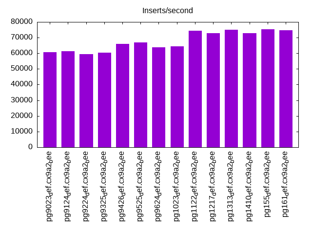
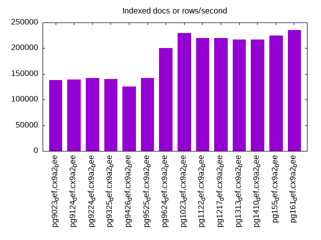
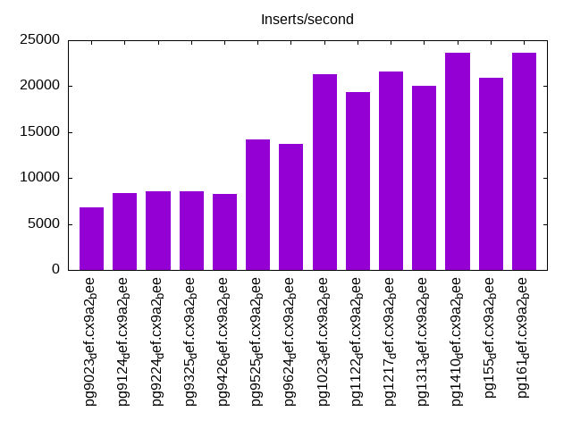
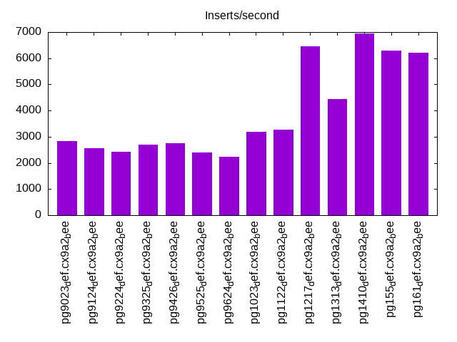
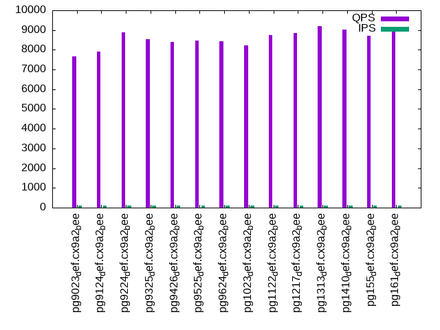
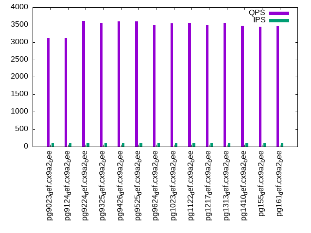
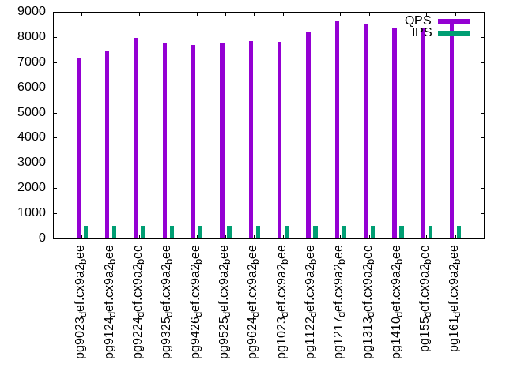
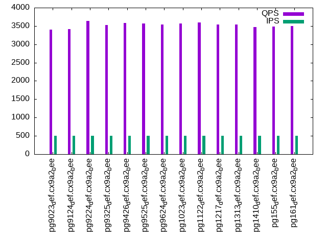
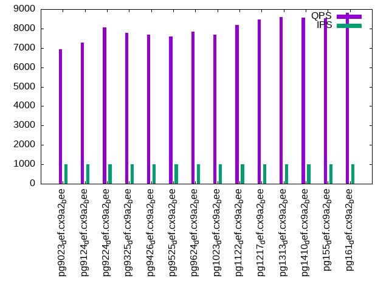
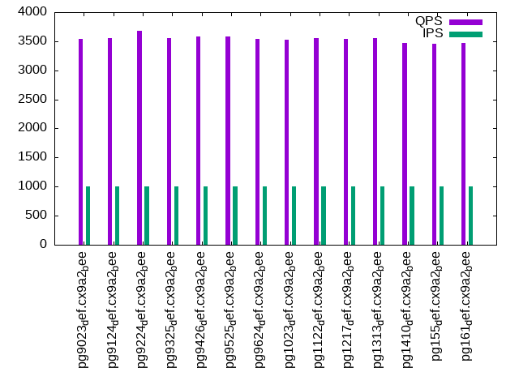

This is a report for the insert benchmark with 20M docs and 1 client(s). It is generated by scripts (bash, awk, sed) and Tufte might not be impressed. An overview of the insert benchmark is here and a short update is here. Below, by DBMS, I mean DBMS+version.config. An example is my8020.c10b40 where my means MySQL, 8020 is version 8.0.20 and c10b40 is the name for the configuration file.
The test server has 8 AMD cores, 16G RAM and an NVMe SSD. It is described here as the Beelink. The benchmark was run with 1 client and there were 1 or 3 connections per client (1 for queries or inserts without rate limits, 1+1 for rate limited inserts+deletes). It uses 1 table. It loads 20M rows per table without secondary indexes, creates 3 secondary indexes per table, then inserts 50m+50m rows per table with a delete per insert to avoid growing the table. It then does 6 read+write tests for 1800s each that do queries as fast as possible with 100,100,500,500,1000,1000 inserts/s and the same for deletes/s per client concurrent with the queries. The database is cached in memory. Clients and the DBMS share one server. The per-database configs are in the per-database subdirectories here.
The tested DBMS are:
The numbers are inserts/s for l.i0, l.i1 and l.i2, indexed docs (or rows) /s for l.x and queries/s for qr100, qp100 thru qr1000, qp1000" The values are the average rate over the entire test for inserts (IPS) and queries (QPS). The range of values for IPS and QPS is split into 3 parts: bottom 25%, middle 50%, top 25%. Values in the bottom 25% have a red background, values in the top 25% have a green background and values in the middle have no color. A gray background is used for values that can be ignored because the DBMS did not sustain the target insert rate. Red backgrounds are not used when the minimum value is within 80% of the max value.
| dbms | l.i0 | l.x | l.i1 | l.i2 | qr100 | qp100 | qr500 | qp500 | qr1000 | qp1000 |
|---|---|---|---|---|---|---|---|---|---|---|
| pg9023_def.cx9a2_bee | 60790 | 137932 | 6856 | 2839 | 7674 | 3116 | 7154 | 3395 | 6942 | 3537 |
| pg9124_def.cx9a2_bee | 61350 | 138890 | 8326 | 2563 | 7922 | 3128 | 7460 | 3418 | 7288 | 3553 |
| pg9224_def.cx9a2_bee | 59524 | 141845 | 8598 | 2423 | 8898 | 3610 | 7956 | 3634 | 8045 | 3677 |
| pg9325_def.cx9a2_bee | 60423 | 139861 | 8556 | 2690 | 8528 | 3558 | 7791 | 3529 | 7773 | 3555 |
| pg9426_def.cx9a2_bee | 66007 | 125787 | 8316 | 2742 | 8400 | 3598 | 7689 | 3579 | 7698 | 3586 |
| pg9525_def.cx9a2_bee | 66890 | 141845 | 14215 | 2395 | 8483 | 3592 | 7773 | 3566 | 7588 | 3581 |
| pg9624_def.cx9a2_bee | 63898 | 200001 | 13699 | 2222 | 8439 | 3502 | 7853 | 3542 | 7847 | 3538 |
| pg1023_def.cx9a2_bee | 64309 | 229886 | 21345 | 3189 | 8237 | 3539 | 7820 | 3567 | 7697 | 3532 |
| pg1122_def.cx9a2_bee | 74349 | 219781 | 19389 | 3276 | 8746 | 3557 | 8191 | 3595 | 8193 | 3554 |
| pg1217_def.cx9a2_bee | 72727 | 219781 | 21552 | 6468 | 8833 | 3493 | 8629 | 3538 | 8456 | 3534 |
| pg1313_def.cx9a2_bee | 74906 | 217392 | 20030 | 4446 | 9199 | 3553 | 8545 | 3535 | 8581 | 3558 |
| pg1410_def.cx9a2_bee | 72727 | 217392 | 23613 | 6944 | 9012 | 3470 | 8386 | 3475 | 8567 | 3476 |
| pg155_def.cx9a2_bee | 75188 | 224720 | 20866 | 6289 | 8717 | 3437 | 8332 | 3481 | 8539 | 3454 |
| pg161_def.cx9a2_bee | 74627 | 235295 | 23613 | 6203 | 8918 | 3463 | 8649 | 3502 | 8825 | 3466 |
This table has relative throughput, throughput for the DBMS relative to the DBMS in the first line, using the absolute throughput from the previous table. Values less than 0.95 have a yellow background. Values greater than 1.05 have a blue background.
| dbms | l.i0 | l.x | l.i1 | l.i2 | qr100 | qp100 | qr500 | qp500 | qr1000 | qp1000 |
|---|---|---|---|---|---|---|---|---|---|---|
| pg9023_def.cx9a2_bee | 1.00 | 1.00 | 1.00 | 1.00 | 1.00 | 1.00 | 1.00 | 1.00 | 1.00 | 1.00 |
| pg9124_def.cx9a2_bee | 1.01 | 1.01 | 1.21 | 0.90 | 1.03 | 1.00 | 1.04 | 1.01 | 1.05 | 1.00 |
| pg9224_def.cx9a2_bee | 0.98 | 1.03 | 1.25 | 0.85 | 1.16 | 1.16 | 1.11 | 1.07 | 1.16 | 1.04 |
| pg9325_def.cx9a2_bee | 0.99 | 1.01 | 1.25 | 0.95 | 1.11 | 1.14 | 1.09 | 1.04 | 1.12 | 1.01 |
| pg9426_def.cx9a2_bee | 1.09 | 0.91 | 1.21 | 0.97 | 1.09 | 1.15 | 1.07 | 1.05 | 1.11 | 1.01 |
| pg9525_def.cx9a2_bee | 1.10 | 1.03 | 2.07 | 0.84 | 1.11 | 1.15 | 1.09 | 1.05 | 1.09 | 1.01 |
| pg9624_def.cx9a2_bee | 1.05 | 1.45 | 2.00 | 0.78 | 1.10 | 1.12 | 1.10 | 1.04 | 1.13 | 1.00 |
| pg1023_def.cx9a2_bee | 1.06 | 1.67 | 3.11 | 1.12 | 1.07 | 1.14 | 1.09 | 1.05 | 1.11 | 1.00 |
| pg1122_def.cx9a2_bee | 1.22 | 1.59 | 2.83 | 1.15 | 1.14 | 1.14 | 1.14 | 1.06 | 1.18 | 1.00 |
| pg1217_def.cx9a2_bee | 1.20 | 1.59 | 3.14 | 2.28 | 1.15 | 1.12 | 1.21 | 1.04 | 1.22 | 1.00 |
| pg1313_def.cx9a2_bee | 1.23 | 1.58 | 2.92 | 1.57 | 1.20 | 1.14 | 1.19 | 1.04 | 1.24 | 1.01 |
| pg1410_def.cx9a2_bee | 1.20 | 1.58 | 3.44 | 2.45 | 1.17 | 1.11 | 1.17 | 1.02 | 1.23 | 0.98 |
| pg155_def.cx9a2_bee | 1.24 | 1.63 | 3.04 | 2.22 | 1.14 | 1.10 | 1.16 | 1.03 | 1.23 | 0.98 |
| pg161_def.cx9a2_bee | 1.23 | 1.71 | 3.44 | 2.18 | 1.16 | 1.11 | 1.21 | 1.03 | 1.27 | 0.98 |
This lists the average rate of inserts/s for the tests that do inserts concurrent with queries. For such tests the query rate is listed in the table above. The read+write tests are setup so that the insert rate should match the target rate every second. Cells that are not at least 95% of the target have a red background to indicate a failure to satisfy the target.
| dbms | qr100.L1 | qp100.L2 | qr500.L3 | qp500.L4 | qr1000.L5 | qp1000.L6 |
|---|---|---|---|---|---|---|
| pg9023_def.cx9a2_bee | 100 | 100 | 499 | 499 | 998 | 998 |
| pg9124_def.cx9a2_bee | 100 | 100 | 498 | 499 | 997 | 998 |
| pg9224_def.cx9a2_bee | 100 | 100 | 499 | 499 | 998 | 998 |
| pg9325_def.cx9a2_bee | 100 | 100 | 499 | 499 | 998 | 998 |
| pg9426_def.cx9a2_bee | 100 | 100 | 499 | 499 | 998 | 998 |
| pg9525_def.cx9a2_bee | 100 | 100 | 499 | 499 | 998 | 998 |
| pg9624_def.cx9a2_bee | 100 | 100 | 499 | 499 | 999 | 998 |
| pg1023_def.cx9a2_bee | 100 | 100 | 498 | 499 | 997 | 997 |
| pg1122_def.cx9a2_bee | 100 | 100 | 499 | 499 | 998 | 998 |
| pg1217_def.cx9a2_bee | 100 | 100 | 499 | 499 | 998 | 998 |
| pg1313_def.cx9a2_bee | 100 | 100 | 499 | 499 | 998 | 999 |
| pg1410_def.cx9a2_bee | 100 | 100 | 499 | 499 | 998 | 998 |
| pg155_def.cx9a2_bee | 100 | 100 | 499 | 499 | 998 | 998 |
| pg161_def.cx9a2_bee | 100 | 100 | 499 | 499 | 998 | 998 |
| target | 100 | 100 | 500 | 500 | 1000 | 1000 |
l.i0: load without secondary indexes. Graphs for performance per 1-second interval are here.
Average throughput:
Insert response time histogram: each cell has the percentage of responses that take <= the time in the header and max is the max response time in seconds. For the max column values in the top 25% of the range have a red background and in the bottom 25% of the range have a green background. The red background is not used when the min value is within 80% of the max value.
| dbms | 256us | 1ms | 4ms | 16ms | 64ms | 256ms | 1s | 4s | 16s | gt | max |
|---|---|---|---|---|---|---|---|---|---|---|---|
| pg9023_def.cx9a2_bee | 99.142 | 0.789 | 0.068 | 0.044 | |||||||
| pg9124_def.cx9a2_bee | 99.924 | 0.075 | 0.001 | 0.039 | |||||||
| pg9224_def.cx9a2_bee | 99.938 | 0.061 | 0.001 | 0.039 | |||||||
| pg9325_def.cx9a2_bee | 99.885 | 0.114 | 0.001 | 0.051 | |||||||
| pg9426_def.cx9a2_bee | 99.886 | 0.112 | 0.002 | 0.055 | |||||||
| pg9525_def.cx9a2_bee | 100.000 | 0.003 | |||||||||
| pg9624_def.cx9a2_bee | 100.000 | 0.004 | |||||||||
| pg1023_def.cx9a2_bee | 100.000 | 0.004 | |||||||||
| pg1122_def.cx9a2_bee | 100.000 | 0.003 | |||||||||
| pg1217_def.cx9a2_bee | 100.000 | 0.003 | |||||||||
| pg1313_def.cx9a2_bee | 100.000 | 0.003 | |||||||||
| pg1410_def.cx9a2_bee | 100.000 | 0.003 | |||||||||
| pg155_def.cx9a2_bee | 100.000 | 0.003 | |||||||||
| pg161_def.cx9a2_bee | 100.000 | 0.003 |
Performance metrics for the DBMS listed above. Some are normalized by throughput, others are not. Legend for results is here.
ips qps rps rmbps wps wmbps rpq rkbpq wpi wkbpi csps cpups cspq cpupq dbgb1 dbgb2 rss maxop p50 p99 tag 60790 0 0 0.0 256.0 22.9 0.000 0.000 0.004 0.385 6384 21.3 0.105 28 1.9 2.1 0.4 0.044 61046 57726 pg9023_def.cx9a2_bee 61350 0 0 0.0 255.5 23.0 0.000 0.000 0.004 0.383 6409 22.2 0.104 29 1.9 2.1 1.4 0.039 61416 59534 pg9124_def.cx9a2_bee 59524 0 0 0.0 1380.9 22.4 0.000 0.000 0.023 0.385 9700 22.0 0.163 30 1.9 2.1 0.2 0.039 59833 57137 pg9224_def.cx9a2_bee 60423 0 0 0.0 1109.7 26.2 0.000 0.000 0.018 0.444 8913 22.7 0.148 30 1.9 2.1 0.2 0.051 60733 57135 pg9325_def.cx9a2_bee 66007 0 0 0.0 1122.5 28.7 0.000 0.000 0.017 0.445 9387 22.7 0.142 28 1.9 2.1 0.4 0.055 66124 62136 pg9426_def.cx9a2_bee 66890 0 0 0.0 850.3 28.7 0.000 0.000 0.013 0.440 9415 22.4 0.141 27 1.9 5.2 0.2 0.003 67225 65522 pg9525_def.cx9a2_bee 63898 0 0 0.0 76.5 27.4 0.000 0.000 0.001 0.440 7966 23.4 0.125 29 1.9 5.2 1.9 0.004 64081 62524 pg9624_def.cx9a2_bee 64309 0 0 0.0 75.7 27.5 0.000 0.000 0.001 0.439 7976 23.2 0.124 29 1.9 5.2 0.6 0.004 64630 62721 pg1023_def.cx9a2_bee 74349 0 0 0.0 86.8 31.5 0.000 0.000 0.001 0.434 9110 23.3 0.123 25 1.9 5.2 2.0 0.003 74816 72514 pg1122_def.cx9a2_bee 72727 0 0 0.0 86.2 30.9 0.000 0.000 0.001 0.435 8954 23.2 0.123 26 1.9 5.2 0.2 0.003 73275 69014 pg1217_def.cx9a2_bee 74906 0 0 0.0 87.1 31.8 0.000 0.000 0.001 0.435 9143 23.1 0.122 25 1.9 5.2 0.7 0.003 75118 72918 pg1313_def.cx9a2_bee 72727 0 0 0.0 84.2 30.7 0.000 0.000 0.001 0.432 9034 22.9 0.124 25 1.9 5.2 1.5 0.003 72946 70885 pg1410_def.cx9a2_bee 75188 0 0 0.0 87.1 31.8 0.000 0.000 0.001 0.433 9224 23.2 0.123 25 1.9 5.2 0.2 0.003 75625 73714 pg155_def.cx9a2_bee 74627 0 0 0.0 86.6 31.6 0.000 0.000 0.001 0.433 9168 23.0 0.123 25 1.9 5.2 0.2 0.003 74916 72409 pg161_def.cx9a2_bee
l.x: create secondary indexes.
Average throughput:
Performance metrics for the DBMS listed above. Some are normalized by throughput, others are not. Legend for results is here.
ips qps rps rmbps wps wmbps rpq rkbpq wpi wkbpi csps cpups cspq cpupq dbgb1 dbgb2 rss maxop p50 p99 tag 137932 0 0 0.0 254.7 42.9 0.000 0.000 0.002 0.318 466 11.8 0.003 7 3.9 4.0 1.8 0.003 NA NA pg9023_def.cx9a2_bee 138890 0 0 0.0 251.0 37.7 0.000 0.000 0.002 0.278 427 12.2 0.003 7 3.9 4.0 1.8 0.003 NA NA pg9124_def.cx9a2_bee 141845 0 0 0.0 234.5 39.4 0.000 0.000 0.002 0.285 401 12.2 0.003 7 3.9 4.0 1.8 0.003 NA NA pg9224_def.cx9a2_bee 139861 0 0 0.0 260.2 42.0 0.000 0.000 0.002 0.308 395 12.2 0.003 7 3.9 4.0 2.0 0.003 NA NA pg9325_def.cx9a2_bee 125787 0 0 0.0 230.6 34.6 0.000 0.000 0.002 0.282 398 12.3 0.003 8 3.9 4.0 2.1 0.003 NA NA pg9426_def.cx9a2_bee 141845 0 0 0.0 111.4 52.4 0.000 0.000 0.001 0.378 495 11.7 0.003 7 3.9 8.9 2.1 0.003 NA NA pg9525_def.cx9a2_bee 200001 0 0 0.0 138.6 65.1 0.000 0.000 0.001 0.333 737 12.1 0.004 5 3.9 8.9 2.1 0.003 NA NA pg9624_def.cx9a2_bee 229886 0 0 0.0 116.0 54.4 0.000 0.000 0.001 0.242 631 11.8 0.003 4 3.9 8.9 2.1 0.003 NA NA pg1023_def.cx9a2_bee 219781 0 0 0.0 120.3 56.6 0.000 0.000 0.001 0.264 609 11.7 0.003 4 3.9 8.9 2.1 0.003 NA NA pg1122_def.cx9a2_bee 219781 0 0 0.0 131.3 60.9 0.000 0.000 0.001 0.284 663 11.6 0.003 4 3.9 8.9 2.1 0.003 NA NA pg1217_def.cx9a2_bee 217392 0 0 0.0 113.4 53.4 0.000 0.000 0.001 0.252 623 11.8 0.003 4 3.9 8.9 2.1 0.003 NA NA pg1313_def.cx9a2_bee 217392 0 0 0.0 112.2 53.1 0.000 0.000 0.001 0.250 704 11.9 0.003 4 3.9 8.9 2.1 0.003 NA NA pg1410_def.cx9a2_bee 224720 0 0 0.0 108.2 50.9 0.000 0.000 0.000 0.232 638 11.9 0.003 4 3.9 8.9 2.1 0.003 NA NA pg155_def.cx9a2_bee 235295 0 0 0.0 132.0 62.4 0.000 0.000 0.001 0.272 656 11.9 0.003 4 3.9 8.9 2.1 0.003 NA NA pg161_def.cx9a2_bee
l.i1: continue load after secondary indexes created with 50 inserts per transaction. Graphs for performance per 1-second interval are here.
Average throughput:
Insert response time histogram: each cell has the percentage of responses that take <= the time in the header and max is the max response time in seconds. For the max column values in the top 25% of the range have a red background and in the bottom 25% of the range have a green background. The red background is not used when the min value is within 80% of the max value.
| dbms | 256us | 1ms | 4ms | 16ms | 64ms | 256ms | 1s | 4s | 16s | gt | max |
|---|---|---|---|---|---|---|---|---|---|---|---|
| pg9023_def.cx9a2_bee | 98.115 | 1.885 | nonzero | 0.070 | |||||||
| pg9124_def.cx9a2_bee | 0.003 | 99.549 | 0.448 | nonzero | 0.067 | ||||||
| pg9224_def.cx9a2_bee | 0.063 | 99.878 | 0.058 | 0.001 | 0.109 | ||||||
| pg9325_def.cx9a2_bee | 0.410 | 99.358 | 0.225 | 0.008 | 0.136 | ||||||
| pg9426_def.cx9a2_bee | 2.098 | 97.624 | 0.261 | 0.017 | 0.156 | ||||||
| pg9525_def.cx9a2_bee | 99.993 | 0.005 | 0.002 | nonzero | 0.073 | ||||||
| pg9624_def.cx9a2_bee | 99.996 | 0.003 | 0.001 | nonzero | 0.075 | ||||||
| pg1023_def.cx9a2_bee | 99.998 | 0.002 | nonzero | 0.059 | |||||||
| pg1122_def.cx9a2_bee | 99.996 | 0.002 | 0.002 | 0.060 | |||||||
| pg1217_def.cx9a2_bee | 99.997 | 0.002 | nonzero | 0.067 | |||||||
| pg1313_def.cx9a2_bee | 99.997 | 0.002 | 0.001 | 0.026 | |||||||
| pg1410_def.cx9a2_bee | 99.998 | 0.002 | nonzero | 0.060 | |||||||
| pg155_def.cx9a2_bee | 99.998 | 0.002 | nonzero | 0.029 | |||||||
| pg161_def.cx9a2_bee | 99.993 | 0.006 | 0.001 | 0.064 |
Delete response time histogram: each cell has the percentage of responses that take <= the time in the header and max is the max response time in seconds. For the max column values in the top 25% of the range have a red background and in the bottom 25% of the range have a green background. The red background is not used when the min value is within 80% of the max value.
| dbms | 256us | 1ms | 4ms | 16ms | 64ms | 256ms | 1s | 4s | 16s | gt | max |
|---|---|---|---|---|---|---|---|---|---|---|---|
| pg9023_def.cx9a2_bee | 0.026 | 72.780 | 4.521 | 21.400 | 1.270 | 0.003 | 0.131 | ||||
| pg9124_def.cx9a2_bee | 0.046 | 76.581 | 0.446 | 21.792 | 1.134 | 0.001 | 0.133 | ||||
| pg9224_def.cx9a2_bee | 0.051 | 77.380 | 0.406 | 22.150 | 0.012 | 0.002 | 0.069 | ||||
| pg9325_def.cx9a2_bee | 0.045 | 80.441 | 0.403 | 19.075 | 0.030 | 0.006 | 0.001 | 0.298 | |||
| pg9426_def.cx9a2_bee | 0.047 | 80.353 | 0.419 | 17.918 | 1.257 | 0.006 | 0.001 | 0.418 | |||
| pg9525_def.cx9a2_bee | 0.417 | 83.272 | 0.494 | 15.799 | 0.013 | 0.004 | 0.122 | ||||
| pg9624_def.cx9a2_bee | 0.348 | 82.582 | 0.456 | 16.606 | 0.003 | 0.004 | 0.115 | ||||
| pg1023_def.cx9a2_bee | 0.297 | 82.618 | 14.441 | 0.231 | 2.409 | 0.005 | 0.173 | ||||
| pg1122_def.cx9a2_bee | 0.606 | 83.829 | 9.244 | 4.474 | 1.848 | 0.057 | |||||
| pg1217_def.cx9a2_bee | 0.221 | 83.254 | 6.437 | 10.088 | 0.014 | ||||||
| pg1313_def.cx9a2_bee | 0.288 | 83.542 | 1.317 | 14.853 | nonzero | 0.024 | |||||
| pg1410_def.cx9a2_bee | 0.187 | 83.647 | 6.350 | 9.816 | nonzero | 0.020 | |||||
| pg155_def.cx9a2_bee | 0.162 | 82.770 | 6.306 | 10.761 | 0.014 | ||||||
| pg161_def.cx9a2_bee | 0.156 | 83.338 | 6.189 | 10.316 | 0.001 | 0.017 |
Performance metrics for the DBMS listed above. Some are normalized by throughput, others are not. Legend for results is here.
ips qps rps rmbps wps wmbps rpq rkbpq wpi wkbpi csps cpups cspq cpupq dbgb1 dbgb2 rss maxop p50 p99 tag 6856 0 0 0.0 13595.4 230.9 0.000 0.000 1.983 34.483 5212 20.3 0.760 237 5.5 5.6 0.9 0.070 7242 2798 pg9023_def.cx9a2_bee 8326 0 0 0.0 16458.2 278.8 0.000 0.000 1.977 34.290 5428 24.1 0.652 232 5.5 5.7 2.1 0.067 8990 2848 pg9124_def.cx9a2_bee 8598 0 0 0.0 16835.9 284.3 0.000 0.000 1.958 33.858 6845 24.7 0.796 230 5.5 5.7 1.7 0.109 9140 4945 pg9224_def.cx9a2_bee 8556 0 0 0.0 16356.1 279.4 0.000 0.000 1.912 33.438 6434 24.3 0.752 227 5.6 5.9 4.6 0.136 9348 3749 pg9325_def.cx9a2_bee 8316 0 0 0.0 15638.9 272.9 0.000 0.000 1.881 33.601 5375 24.2 0.646 233 5.6 5.9 4.6 0.156 9294 2799 pg9426_def.cx9a2_bee 14215 0 2 0.3 482.0 19.7 0.000 0.020 0.034 1.421 7273 20.5 0.512 115 5.7 34.2 4.6 0.073 4195 3296 pg9525_def.cx9a2_bee 13699 0 2 0.3 64.5 19.0 0.000 0.020 0.005 1.422 6940 19.9 0.507 116 5.7 34.2 4.6 0.075 4149 3246 pg9624_def.cx9a2_bee 21345 0 22 0.3 96.5 29.3 0.001 0.012 0.005 1.408 10604 24.8 0.497 93 5.6 33.9 3.6 0.059 27988 2197 pg1023_def.cx9a2_bee 19389 0 11 0.2 83.2 25.1 0.001 0.013 0.004 1.326 9681 22.6 0.499 93 5.7 33.1 4.6 0.060 29517 2098 pg1122_def.cx9a2_bee 21552 0 3 0.4 90.6 27.1 0.000 0.020 0.004 1.288 10641 24.5 0.494 91 5.6 32.7 2.0 0.067 29467 5044 pg1217_def.cx9a2_bee 20030 0 23 0.1 85.0 25.6 0.001 0.006 0.004 1.306 9948 23.8 0.497 95 5.6 32.9 0.2 0.026 28931 5194 pg1313_def.cx9a2_bee 23613 0 19 0.3 90.9 28.2 0.001 0.012 0.004 1.221 11507 23.2 0.487 79 5.4 32.2 0.1 0.060 29518 6798 pg1410_def.cx9a2_bee 20866 0 19 0.1 86.7 25.8 0.001 0.005 0.004 1.267 10209 22.1 0.489 85 5.4 32.6 1.7 0.029 29466 4896 pg155_def.cx9a2_bee 23613 0 43 0.2 91.6 28.2 0.002 0.008 0.004 1.221 11496 23.4 0.487 79 5.4 32.1 3.4 0.064 29368 9140 pg161_def.cx9a2_bee
l.i2: continue load after secondary indexes created with 5 inserts per transaction. Graphs for performance per 1-second interval are here.
Average throughput:
Insert response time histogram: each cell has the percentage of responses that take <= the time in the header and max is the max response time in seconds. For the max column values in the top 25% of the range have a red background and in the bottom 25% of the range have a green background. The red background is not used when the min value is within 80% of the max value.
| dbms | 256us | 1ms | 4ms | 16ms | 64ms | 256ms | 1s | 4s | 16s | gt | max |
|---|---|---|---|---|---|---|---|---|---|---|---|
| pg9023_def.cx9a2_bee | 89.201 | 9.445 | 1.328 | 0.027 | 0.055 | ||||||
| pg9124_def.cx9a2_bee | 94.997 | 4.857 | 0.099 | 0.046 | 0.033 | ||||||
| pg9224_def.cx9a2_bee | 94.667 | 5.165 | 0.167 | 0.001 | 0.045 | ||||||
| pg9325_def.cx9a2_bee | 95.859 | 3.972 | 0.168 | 0.002 | 0.050 | ||||||
| pg9426_def.cx9a2_bee | 96.167 | 3.663 | 0.167 | 0.002 | nonzero | 0.105 | |||||
| pg9525_def.cx9a2_bee | 28.761 | 71.234 | 0.002 | 0.002 | 0.001 | 0.039 | |||||
| pg9624_def.cx9a2_bee | 24.461 | 75.536 | 0.002 | 0.001 | 0.013 | ||||||
| pg1023_def.cx9a2_bee | 22.753 | 77.244 | 0.003 | nonzero | 0.005 | ||||||
| pg1122_def.cx9a2_bee | 41.034 | 58.963 | 0.003 | nonzero | nonzero | 0.040 | |||||
| pg1217_def.cx9a2_bee | 40.764 | 59.232 | 0.003 | nonzero | 0.005 | ||||||
| pg1313_def.cx9a2_bee | 38.745 | 61.252 | 0.003 | 0.004 | |||||||
| pg1410_def.cx9a2_bee | 23.442 | 76.555 | 0.003 | nonzero | nonzero | 0.017 | |||||
| pg155_def.cx9a2_bee | 21.840 | 78.157 | 0.003 | nonzero | nonzero | 0.017 | |||||
| pg161_def.cx9a2_bee | 21.640 | 78.356 | 0.003 | nonzero | 0.008 |
Delete response time histogram: each cell has the percentage of responses that take <= the time in the header and max is the max response time in seconds. For the max column values in the top 25% of the range have a red background and in the bottom 25% of the range have a green background. The red background is not used when the min value is within 80% of the max value.
| dbms | 256us | 1ms | 4ms | 16ms | 64ms | 256ms | 1s | 4s | 16s | gt | max |
|---|---|---|---|---|---|---|---|---|---|---|---|
| pg9023_def.cx9a2_bee | 41.359 | 34.035 | 8.152 | 16.420 | 0.033 | 0.055 | |||||
| pg9124_def.cx9a2_bee | 45.731 | 29.752 | 0.990 | 23.505 | 0.022 | nonzero | 0.065 | ||||
| pg9224_def.cx9a2_bee | 41.023 | 35.522 | 0.019 | 23.435 | 0.001 | 0.057 | |||||
| pg9325_def.cx9a2_bee | 44.873 | 35.229 | 0.019 | 19.878 | 0.001 | 0.001 | 0.215 | ||||
| pg9426_def.cx9a2_bee | 43.975 | 36.120 | 0.025 | 19.879 | 0.001 | 0.001 | 0.162 | ||||
| pg9525_def.cx9a2_bee | 61.035 | 18.444 | 0.001 | 20.518 | 0.001 | nonzero | 0.099 | ||||
| pg9624_def.cx9a2_bee | 63.934 | 16.149 | 0.003 | 19.914 | nonzero | nonzero | 0.108 | ||||
| pg1023_def.cx9a2_bee | 66.578 | 16.569 | 1.409 | 15.419 | 0.025 | nonzero | 0.141 | ||||
| pg1122_def.cx9a2_bee | 70.320 | 13.482 | 1.014 | 14.649 | 0.536 | 0.040 | |||||
| pg1217_def.cx9a2_bee | 68.755 | 16.219 | 12.970 | 2.056 | nonzero | 0.017 | |||||
| pg1313_def.cx9a2_bee | 66.987 | 12.370 | 9.140 | 11.503 | 0.012 | ||||||
| pg1410_def.cx9a2_bee | 57.788 | 24.885 | 16.860 | 0.468 | nonzero | 0.017 | |||||
| pg155_def.cx9a2_bee | 55.268 | 24.549 | 20.170 | 0.013 | nonzero | 0.016 | |||||
| pg161_def.cx9a2_bee | 55.760 | 25.037 | 17.374 | 1.829 | 0.009 |
Performance metrics for the DBMS listed above. Some are normalized by throughput, others are not. Legend for results is here.
ips qps rps rmbps wps wmbps rpq rkbpq wpi wkbpi csps cpups cspq cpupq dbgb1 dbgb2 rss maxop p50 p99 tag 2839 0 0 0.0 5618.7 90.9 0.000 0.000 1.979 32.801 12824 18.4 4.517 518 5.5 5.7 1.1 0.055 1214 734 pg9023_def.cx9a2_bee 2563 0 0 0.0 5057.1 81.6 0.000 0.000 1.973 32.609 11247 18.3 4.387 571 5.5 5.8 3.5 0.033 900 579 pg9124_def.cx9a2_bee 2423 0 0 0.0 5060.3 76.5 0.000 0.000 2.088 32.324 11788 18.1 4.865 598 5.5 5.8 3.7 0.045 784 544 pg9224_def.cx9a2_bee 2690 0 0 0.0 5573.0 83.3 0.000 0.000 2.072 31.721 12913 18.6 4.800 553 5.6 5.9 5.0 0.050 789 504 pg9325_def.cx9a2_bee 2742 0 0 0.0 5675.8 85.8 0.000 0.000 2.070 32.051 12907 18.9 4.707 551 5.6 5.9 4.6 0.105 814 564 pg9426_def.cx9a2_bee 2395 0 0 0.0 243.4 5.2 0.000 0.000 0.102 2.232 10245 15.6 4.278 521 5.8 36.8 4.9 0.039 555 404 pg9525_def.cx9a2_bee 2222 0 0 0.0 27.2 5.1 0.000 0.000 0.012 2.357 10857 15.3 4.887 551 5.7 36.8 4.6 0.013 504 340 pg9624_def.cx9a2_bee 3189 0 0 0.0 28.8 6.4 0.000 0.000 0.009 2.053 15371 16.7 4.821 419 5.7 38.8 5.7 0.005 629 470 pg1023_def.cx9a2_bee 3276 0 0 0.0 26.9 5.0 0.000 0.000 0.008 1.559 15895 16.7 4.851 408 5.7 33.7 3.5 0.040 635 265 pg1122_def.cx9a2_bee 6468 0 0 0.0 35.1 8.6 0.000 0.000 0.005 1.369 30937 21.3 4.783 263 5.6 35.1 4.0 0.005 1598 1089 pg1217_def.cx9a2_bee 4446 0 0 0.0 32.9 6.7 0.000 0.000 0.007 1.537 21408 18.6 4.815 335 5.7 33.8 4.4 0.004 1249 824 pg1313_def.cx9a2_bee 6944 0 0 0.0 41.8 11.2 0.000 0.000 0.006 1.659 33011 21.7 4.754 250 5.5 37.9 0.4 0.017 2547 1144 pg1410_def.cx9a2_bee 6289 0 0 0.0 38.8 10.2 0.000 0.000 0.006 1.662 29734 21.0 4.728 267 5.4 37.4 4.3 0.017 2287 1354 pg155_def.cx9a2_bee 6203 0 0 0.0 41.0 10.6 0.000 0.000 0.007 1.747 29477 20.8 4.752 268 5.5 37.2 0.4 0.008 2225 1034 pg161_def.cx9a2_bee
qr100.L1: range queries with 100 insert/s per client. Graphs for performance per 1-second interval are here.
Average throughput:
Query response time histogram: each cell has the percentage of responses that take <= the time in the header and max is the max response time in seconds. For max values in the top 25% of the range have a red background and in the bottom 25% of the range have a green background. The red background is not used when the min value is within 80% of the max value.
| dbms | 256us | 1ms | 4ms | 16ms | 64ms | 256ms | 1s | 4s | 16s | gt | max |
|---|---|---|---|---|---|---|---|---|---|---|---|
| pg9023_def.cx9a2_bee | 99.898 | 0.101 | nonzero | 0.001 | 0.016 | ||||||
| pg9124_def.cx9a2_bee | 99.888 | 0.111 | nonzero | 0.004 | |||||||
| pg9224_def.cx9a2_bee | 99.956 | 0.044 | nonzero | 0.003 | |||||||
| pg9325_def.cx9a2_bee | 99.923 | 0.077 | nonzero | nonzero | 0.004 | ||||||
| pg9426_def.cx9a2_bee | 99.912 | 0.088 | nonzero | nonzero | 0.005 | ||||||
| pg9525_def.cx9a2_bee | 99.931 | 0.069 | nonzero | 0.003 | |||||||
| pg9624_def.cx9a2_bee | 99.923 | 0.076 | nonzero | 0.003 | |||||||
| pg1023_def.cx9a2_bee | 99.922 | 0.077 | nonzero | nonzero | 0.004 | ||||||
| pg1122_def.cx9a2_bee | 99.949 | 0.051 | nonzero | 0.003 | |||||||
| pg1217_def.cx9a2_bee | 99.939 | 0.061 | nonzero | 0.003 | |||||||
| pg1313_def.cx9a2_bee | 99.955 | 0.044 | nonzero | 0.003 | |||||||
| pg1410_def.cx9a2_bee | 99.959 | 0.041 | nonzero | 0.003 | |||||||
| pg155_def.cx9a2_bee | 99.956 | 0.044 | nonzero | 0.002 | |||||||
| pg161_def.cx9a2_bee | 99.971 | 0.029 | nonzero | 0.003 |
Insert response time histogram: each cell has the percentage of responses that take <= the time in the header and max is the max response time in seconds. For max values in the top 25% of the range have a red background and in the bottom 25% of the range have a green background. The red background is not used when the min value is within 80% of the max value.
| dbms | 256us | 1ms | 4ms | 16ms | 64ms | 256ms | 1s | 4s | 16s | gt | max |
|---|---|---|---|---|---|---|---|---|---|---|---|
| pg9023_def.cx9a2_bee | 93.278 | 6.722 | 0.028 | ||||||||
| pg9124_def.cx9a2_bee | 99.861 | 0.139 | 0.021 | ||||||||
| pg9224_def.cx9a2_bee | 99.972 | 0.028 | 0.016 | ||||||||
| pg9325_def.cx9a2_bee | 0.139 | 99.833 | 0.028 | 0.016 | |||||||
| pg9426_def.cx9a2_bee | 0.639 | 99.361 | 0.015 | ||||||||
| pg9525_def.cx9a2_bee | 99.778 | 0.222 | 0.007 | ||||||||
| pg9624_def.cx9a2_bee | 99.778 | 0.222 | 0.008 | ||||||||
| pg1023_def.cx9a2_bee | 99.806 | 0.194 | 0.007 | ||||||||
| pg1122_def.cx9a2_bee | 99.778 | 0.222 | 0.008 | ||||||||
| pg1217_def.cx9a2_bee | 99.833 | 0.167 | 0.007 | ||||||||
| pg1313_def.cx9a2_bee | 99.833 | 0.167 | 0.008 | ||||||||
| pg1410_def.cx9a2_bee | 99.806 | 0.194 | 0.008 | ||||||||
| pg155_def.cx9a2_bee | 99.806 | 0.194 | 0.007 | ||||||||
| pg161_def.cx9a2_bee | 99.861 | 0.139 | 0.008 |
Delete response time histogram: each cell has the percentage of responses that take <= the time in the header and max is the max response time in seconds. For max values in the top 25% of the range have a red background and in the bottom 25% of the range have a green background. The red background is not used when the min value is within 80% of the max value.
| dbms | 256us | 1ms | 4ms | 16ms | 64ms | 256ms | 1s | 4s | 16s | gt | max |
|---|---|---|---|---|---|---|---|---|---|---|---|
| pg9023_def.cx9a2_bee | 12.611 | 65.750 | 21.528 | 0.111 | 0.017 | ||||||
| pg9124_def.cx9a2_bee | 0.056 | 23.889 | 69.528 | 6.528 | 0.004 | ||||||
| pg9224_def.cx9a2_bee | 10.000 | 63.639 | 26.361 | 0.006 | |||||||
| pg9325_def.cx9a2_bee | 12.250 | 64.417 | 23.333 | 0.006 | |||||||
| pg9426_def.cx9a2_bee | 10.806 | 65.083 | 24.111 | 0.006 | |||||||
| pg9525_def.cx9a2_bee | 0.028 | 14.972 | 66.611 | 18.389 | 0.005 | ||||||
| pg9624_def.cx9a2_bee | 10.361 | 67.111 | 22.528 | 0.007 | |||||||
| pg1023_def.cx9a2_bee | 10.556 | 65.139 | 24.306 | 0.009 | |||||||
| pg1122_def.cx9a2_bee | 10.889 | 65.250 | 23.861 | 0.006 | |||||||
| pg1217_def.cx9a2_bee | 33.250 | 66.750 | 0.003 | ||||||||
| pg1313_def.cx9a2_bee | 0.222 | 36.083 | 63.694 | 0.003 | |||||||
| pg1410_def.cx9a2_bee | 27.694 | 72.306 | 0.003 | ||||||||
| pg155_def.cx9a2_bee | 25.222 | 74.694 | 0.083 | 0.005 | |||||||
| pg161_def.cx9a2_bee | 25.944 | 73.944 | 0.111 | 0.005 |
Performance metrics for the DBMS listed above. Some are normalized by throughput, others are not. Legend for results is here.
ips qps rps rmbps wps wmbps rpq rkbpq wpi wkbpi csps cpups cspq cpupq dbgb1 dbgb2 rss maxop p50 p99 tag 100 7674 0 0.0 196.1 2.8 0.000 0.000 1.967 28.824 29540 12.6 3.849 131 5.5 5.7 1.3 0.016 7271 6984 pg9023_def.cx9a2_bee 100 7922 0 0.0 195.1 2.8 0.000 0.000 1.959 28.874 30523 12.5 3.853 126 5.5 5.7 1.5 0.004 7542 7288 pg9124_def.cx9a2_bee 100 8898 0 0.0 197.1 2.8 0.000 0.000 1.976 28.874 34197 12.5 3.843 112 5.5 5.7 1.5 0.003 8276 7958 pg9224_def.cx9a2_bee 100 8528 0 0.0 213.2 2.9 0.000 0.000 2.137 29.268 32796 12.5 3.846 117 5.6 5.8 1.2 0.004 8176 7943 pg9325_def.cx9a2_bee 100 8400 0 0.0 213.9 2.9 0.000 0.000 2.146 29.322 32335 12.6 3.850 120 5.6 5.8 1.2 0.005 8035 7757 pg9426_def.cx9a2_bee 100 8483 0 0.0 8.5 0.6 0.000 0.000 0.086 5.894 32574 12.8 3.840 121 5.8 36.8 0.4 0.003 7980 7703 pg9525_def.cx9a2_bee 100 8439 0 0.0 7.8 0.6 0.000 0.000 0.078 6.142 32405 12.9 3.840 122 5.7 36.8 1.2 0.003 8065 7798 pg9624_def.cx9a2_bee 100 8237 0 0.0 7.6 0.6 0.000 0.000 0.076 6.057 31677 13.0 3.846 126 5.7 38.8 0.4 0.004 7915 7660 pg1023_def.cx9a2_bee 100 8746 0 0.0 7.8 0.6 0.000 0.000 0.078 6.117 33606 13.3 3.842 122 5.7 32.4 0.6 0.003 8438 8214 pg1122_def.cx9a2_bee 100 8833 0 0.0 7.7 0.6 0.000 0.000 0.077 6.028 33928 12.9 3.841 117 5.6 34.2 0.6 0.003 8485 8294 pg1217_def.cx9a2_bee 100 9199 0 0.0 8.0 0.6 0.000 0.000 0.080 6.133 35380 13.0 3.846 113 5.7 33.7 0.3 0.003 8726 8502 pg1313_def.cx9a2_bee 100 9012 0 0.0 7.5 0.6 0.000 0.000 0.075 6.041 34603 12.7 3.840 113 5.5 37.9 0.6 0.003 8567 8345 pg1410_def.cx9a2_bee 100 8717 0 0.0 7.3 0.6 0.000 0.000 0.073 5.993 33432 12.7 3.835 117 5.4 37.4 0.3 0.002 8356 8150 pg155_def.cx9a2_bee 100 8918 0 0.0 7.3 0.6 0.000 0.000 0.073 5.981 34233 12.8 3.839 115 5.5 37.2 0.3 0.003 8711 8527 pg161_def.cx9a2_bee
qp100.L2: point queries with 100 insert/s per client. Graphs for performance per 1-second interval are here.
Average throughput:
Query response time histogram: each cell has the percentage of responses that take <= the time in the header and max is the max response time in seconds. For max values in the top 25% of the range have a red background and in the bottom 25% of the range have a green background. The red background is not used when the min value is within 80% of the max value.
| dbms | 256us | 1ms | 4ms | 16ms | 64ms | 256ms | 1s | 4s | 16s | gt | max |
|---|---|---|---|---|---|---|---|---|---|---|---|
| pg9023_def.cx9a2_bee | 31.549 | 68.450 | nonzero | nonzero | 0.005 | ||||||
| pg9124_def.cx9a2_bee | 39.317 | 60.683 | nonzero | nonzero | 0.006 | ||||||
| pg9224_def.cx9a2_bee | 87.419 | 12.581 | nonzero | nonzero | 0.005 | ||||||
| pg9325_def.cx9a2_bee | 85.218 | 14.782 | nonzero | nonzero | 0.004 | ||||||
| pg9426_def.cx9a2_bee | 85.521 | 14.479 | nonzero | 0.004 | |||||||
| pg9525_def.cx9a2_bee | 87.329 | 12.671 | nonzero | 0.003 | |||||||
| pg9624_def.cx9a2_bee | 87.299 | 12.700 | 0.001 | nonzero | 0.005 | ||||||
| pg1023_def.cx9a2_bee | 87.636 | 12.363 | 0.001 | 0.004 | |||||||
| pg1122_def.cx9a2_bee | 87.906 | 12.094 | 0.001 | 0.003 | |||||||
| pg1217_def.cx9a2_bee | 87.051 | 12.949 | nonzero | 0.003 | |||||||
| pg1313_def.cx9a2_bee | 88.292 | 11.707 | nonzero | 0.003 | |||||||
| pg1410_def.cx9a2_bee | 86.846 | 13.153 | nonzero | 0.003 | |||||||
| pg155_def.cx9a2_bee | 86.514 | 13.485 | nonzero | 0.003 | |||||||
| pg161_def.cx9a2_bee | 85.398 | 14.601 | 0.001 | nonzero | 0.005 |
Insert response time histogram: each cell has the percentage of responses that take <= the time in the header and max is the max response time in seconds. For max values in the top 25% of the range have a red background and in the bottom 25% of the range have a green background. The red background is not used when the min value is within 80% of the max value.
| dbms | 256us | 1ms | 4ms | 16ms | 64ms | 256ms | 1s | 4s | 16s | gt | max |
|---|---|---|---|---|---|---|---|---|---|---|---|
| pg9023_def.cx9a2_bee | 93.639 | 6.361 | 0.032 | ||||||||
| pg9124_def.cx9a2_bee | 99.972 | 0.028 | 0.017 | ||||||||
| pg9224_def.cx9a2_bee | 100.000 | 0.013 | |||||||||
| pg9325_def.cx9a2_bee | 0.028 | 99.972 | 0.010 | ||||||||
| pg9426_def.cx9a2_bee | 0.056 | 99.944 | 0.011 | ||||||||
| pg9525_def.cx9a2_bee | 99.833 | 0.167 | 0.007 | ||||||||
| pg9624_def.cx9a2_bee | 99.833 | 0.167 | 0.008 | ||||||||
| pg1023_def.cx9a2_bee | 99.833 | 0.167 | 0.008 | ||||||||
| pg1122_def.cx9a2_bee | 99.889 | 0.111 | 0.006 | ||||||||
| pg1217_def.cx9a2_bee | 99.917 | 0.083 | 0.006 | ||||||||
| pg1313_def.cx9a2_bee | 99.889 | 0.111 | 0.006 | ||||||||
| pg1410_def.cx9a2_bee | 99.889 | 0.111 | 0.007 | ||||||||
| pg155_def.cx9a2_bee | 99.889 | 0.111 | 0.006 | ||||||||
| pg161_def.cx9a2_bee | 99.889 | 0.111 | 0.006 |
Delete response time histogram: each cell has the percentage of responses that take <= the time in the header and max is the max response time in seconds. For max values in the top 25% of the range have a red background and in the bottom 25% of the range have a green background. The red background is not used when the min value is within 80% of the max value.
| dbms | 256us | 1ms | 4ms | 16ms | 64ms | 256ms | 1s | 4s | 16s | gt | max |
|---|---|---|---|---|---|---|---|---|---|---|---|
| pg9023_def.cx9a2_bee | 2.778 | 82.333 | 1.056 | 13.750 | 0.083 | 0.019 | |||||
| pg9124_def.cx9a2_bee | 3.611 | 96.333 | 0.056 | 0.002 | |||||||
| pg9224_def.cx9a2_bee | 0.583 | 83.083 | 0.139 | 16.194 | 0.007 | ||||||
| pg9325_def.cx9a2_bee | 1.667 | 70.944 | 0.306 | 27.083 | 0.007 | ||||||
| pg9426_def.cx9a2_bee | 2.000 | 93.556 | 0.222 | 4.222 | 0.009 | ||||||
| pg9525_def.cx9a2_bee | 1.472 | 98.472 | 0.056 | 0.002 | |||||||
| pg9624_def.cx9a2_bee | 0.944 | 90.806 | 0.333 | 7.917 | 0.008 | ||||||
| pg1023_def.cx9a2_bee | 1.139 | 70.500 | 0.472 | 27.889 | 0.009 | ||||||
| pg1122_def.cx9a2_bee | 1.194 | 84.139 | 0.250 | 14.417 | 0.006 | ||||||
| pg1217_def.cx9a2_bee | 0.444 | 93.278 | 6.250 | 0.028 | 0.005 | ||||||
| pg1313_def.cx9a2_bee | 0.361 | 99.556 | 0.083 | 0.002 | |||||||
| pg1410_def.cx9a2_bee | 0.722 | 99.194 | 0.083 | 0.003 | |||||||
| pg155_def.cx9a2_bee | 1.917 | 90.417 | 7.639 | 0.028 | 0.006 | ||||||
| pg161_def.cx9a2_bee | 0.806 | 74.611 | 24.528 | 0.056 | 0.004 |
Performance metrics for the DBMS listed above. Some are normalized by throughput, others are not. Legend for results is here.
ips qps rps rmbps wps wmbps rpq rkbpq wpi wkbpi csps cpups cspq cpupq dbgb1 dbgb2 rss maxop p50 p99 tag 100 3116 0 0.0 209.9 3.2 0.000 0.000 2.105 32.467 13067 14.6 4.194 375 5.5 5.7 2.0 0.005 3102 2909 pg9023_def.cx9a2_bee 100 3128 0 0.0 209.9 3.2 0.000 0.000 2.104 32.457 13105 13.5 4.190 345 5.5 5.7 2.0 0.006 3119 2940 pg9124_def.cx9a2_bee 100 3610 0 0.0 207.8 3.1 0.000 0.000 2.084 31.912 15023 13.6 4.162 301 5.5 5.7 2.0 0.005 3611 3468 pg9224_def.cx9a2_bee 100 3558 0 0.0 338.3 3.8 0.000 0.000 3.390 38.918 15222 13.3 4.278 299 5.6 5.8 1.4 0.004 3551 3439 pg9325_def.cx9a2_bee 100 3598 0 0.0 338.9 3.8 0.000 0.000 3.396 38.936 15376 13.3 4.274 296 5.6 5.8 0.6 0.004 3596 3484 pg9426_def.cx9a2_bee 100 3592 0 0.0 83.6 1.4 0.000 0.000 0.838 14.483 15296 13.7 4.258 305 5.8 35.4 0.6 0.003 3580 3452 pg9525_def.cx9a2_bee 100 3502 0 0.0 38.5 1.4 0.000 0.000 0.386 14.346 14584 14.2 4.165 324 5.7 34.6 1.2 0.005 3500 3388 pg9624_def.cx9a2_bee 100 3539 0 0.0 37.8 1.4 0.000 0.000 0.379 14.324 14749 14.1 4.167 319 5.7 38.8 2.6 0.004 3531 3417 pg1023_def.cx9a2_bee 100 3557 0 0.0 38.5 1.4 0.000 0.000 0.386 14.372 14823 14.1 4.168 317 5.7 31.5 0.6 0.003 3548 3452 pg1122_def.cx9a2_bee 100 3493 0 0.0 38.2 1.4 0.000 0.000 0.383 14.288 14554 14.1 4.167 323 5.6 33.2 0.6 0.003 3484 3388 pg1217_def.cx9a2_bee 100 3553 0 0.0 38.8 1.4 0.000 0.000 0.389 14.343 14799 14.2 4.165 320 5.7 32.8 1.3 0.003 3547 3438 pg1313_def.cx9a2_bee 100 3470 0 0.0 38.1 1.4 0.000 0.000 0.382 14.224 14483 13.8 4.173 318 5.5 37.9 0.6 0.003 3468 3372 pg1410_def.cx9a2_bee 100 3437 0 0.0 37.2 1.4 0.000 0.000 0.373 14.191 14189 13.6 4.129 317 5.4 37.3 0.6 0.003 3423 3327 pg155_def.cx9a2_bee 100 3463 0 0.0 37.7 1.4 0.000 0.000 0.378 14.270 14331 13.1 4.139 303 5.5 37.2 0.6 0.005 3439 3339 pg161_def.cx9a2_bee
qr500.L3: range queries with 500 insert/s per client. Graphs for performance per 1-second interval are here.
Average throughput:
Query response time histogram: each cell has the percentage of responses that take <= the time in the header and max is the max response time in seconds. For max values in the top 25% of the range have a red background and in the bottom 25% of the range have a green background. The red background is not used when the min value is within 80% of the max value.
| dbms | 256us | 1ms | 4ms | 16ms | 64ms | 256ms | 1s | 4s | 16s | gt | max |
|---|---|---|---|---|---|---|---|---|---|---|---|
| pg9023_def.cx9a2_bee | 99.711 | 0.287 | nonzero | 0.002 | nonzero | 0.027 | |||||
| pg9124_def.cx9a2_bee | 99.769 | 0.230 | nonzero | nonzero | 0.005 | ||||||
| pg9224_def.cx9a2_bee | 99.851 | 0.149 | nonzero | nonzero | 0.034 | ||||||
| pg9325_def.cx9a2_bee | 99.632 | 0.368 | nonzero | nonzero | 0.005 | ||||||
| pg9426_def.cx9a2_bee | 99.591 | 0.408 | nonzero | nonzero | nonzero | 0.028 | |||||
| pg9525_def.cx9a2_bee | 99.676 | 0.324 | nonzero | 0.004 | |||||||
| pg9624_def.cx9a2_bee | 99.790 | 0.210 | nonzero | 0.003 | |||||||
| pg1023_def.cx9a2_bee | 99.747 | 0.253 | nonzero | 0.003 | |||||||
| pg1122_def.cx9a2_bee | 99.861 | 0.139 | nonzero | 0.003 | |||||||
| pg1217_def.cx9a2_bee | 99.919 | 0.081 | nonzero | 0.002 | |||||||
| pg1313_def.cx9a2_bee | 99.905 | 0.094 | nonzero | 0.004 | |||||||
| pg1410_def.cx9a2_bee | 99.925 | 0.075 | nonzero | 0.003 | |||||||
| pg155_def.cx9a2_bee | 99.932 | 0.068 | nonzero | nonzero | 0.005 | ||||||
| pg161_def.cx9a2_bee | 99.951 | 0.049 | nonzero | 0.003 |
Insert response time histogram: each cell has the percentage of responses that take <= the time in the header and max is the max response time in seconds. For max values in the top 25% of the range have a red background and in the bottom 25% of the range have a green background. The red background is not used when the min value is within 80% of the max value.
| dbms | 256us | 1ms | 4ms | 16ms | 64ms | 256ms | 1s | 4s | 16s | gt | max |
|---|---|---|---|---|---|---|---|---|---|---|---|
| pg9023_def.cx9a2_bee | 92.139 | 7.861 | 0.037 | ||||||||
| pg9124_def.cx9a2_bee | 0.006 | 99.867 | 0.128 | 0.039 | |||||||
| pg9224_def.cx9a2_bee | 0.044 | 99.944 | 0.011 | 0.025 | |||||||
| pg9325_def.cx9a2_bee | 0.161 | 99.828 | 0.011 | 0.020 | |||||||
| pg9426_def.cx9a2_bee | 0.067 | 99.933 | 0.014 | ||||||||
| pg9525_def.cx9a2_bee | 99.961 | 0.039 | 0.007 | ||||||||
| pg9624_def.cx9a2_bee | 99.967 | 0.033 | 0.008 | ||||||||
| pg1023_def.cx9a2_bee | 99.967 | 0.033 | 0.008 | ||||||||
| pg1122_def.cx9a2_bee | 99.972 | 0.028 | 0.006 | ||||||||
| pg1217_def.cx9a2_bee | 99.978 | 0.022 | 0.008 | ||||||||
| pg1313_def.cx9a2_bee | 99.978 | 0.022 | 0.007 | ||||||||
| pg1410_def.cx9a2_bee | 99.967 | 0.033 | 0.008 | ||||||||
| pg155_def.cx9a2_bee | 99.983 | 0.017 | 0.008 | ||||||||
| pg161_def.cx9a2_bee | 99.978 | 0.022 | 0.008 |
Delete response time histogram: each cell has the percentage of responses that take <= the time in the header and max is the max response time in seconds. For max values in the top 25% of the range have a red background and in the bottom 25% of the range have a green background. The red background is not used when the min value is within 80% of the max value.
| dbms | 256us | 1ms | 4ms | 16ms | 64ms | 256ms | 1s | 4s | 16s | gt | max |
|---|---|---|---|---|---|---|---|---|---|---|---|
| pg9023_def.cx9a2_bee | 2.100 | 73.178 | 13.600 | 10.911 | 0.211 | 0.029 | |||||
| pg9124_def.cx9a2_bee | 2.300 | 75.583 | 14.944 | 7.172 | 0.006 | ||||||
| pg9224_def.cx9a2_bee | 3.544 | 76.656 | 12.367 | 7.433 | 0.007 | ||||||
| pg9325_def.cx9a2_bee | 3.906 | 75.722 | 13.194 | 7.178 | 0.007 | ||||||
| pg9426_def.cx9a2_bee | 4.983 | 75.544 | 12.950 | 6.522 | 0.009 | ||||||
| pg9525_def.cx9a2_bee | 9.183 | 73.039 | 13.294 | 4.483 | 0.005 | ||||||
| pg9624_def.cx9a2_bee | 12.622 | 65.556 | 13.206 | 8.617 | 0.007 | ||||||
| pg1023_def.cx9a2_bee | 13.756 | 66.611 | 12.667 | 6.967 | 0.007 | ||||||
| pg1122_def.cx9a2_bee | 16.417 | 66.083 | 13.106 | 4.394 | 0.006 | ||||||
| pg1217_def.cx9a2_bee | 13.411 | 71.972 | 14.617 | 0.003 | |||||||
| pg1313_def.cx9a2_bee | 11.889 | 69.917 | 18.183 | 0.011 | 0.005 | ||||||
| pg1410_def.cx9a2_bee | 6.161 | 77.300 | 16.539 | 0.003 | |||||||
| pg155_def.cx9a2_bee | 6.806 | 75.472 | 17.722 | 0.003 | |||||||
| pg161_def.cx9a2_bee | 5.883 | 76.506 | 17.589 | 0.022 | 0.004 |
Performance metrics for the DBMS listed above. Some are normalized by throughput, others are not. Legend for results is here.
ips qps rps rmbps wps wmbps rpq rkbpq wpi wkbpi csps cpups cspq cpupq dbgb1 dbgb2 rss maxop p50 p99 tag 499 7154 0 0.0 999.0 16.3 0.000 0.000 2.004 33.417 27741 13.7 3.878 153 5.5 5.7 1.9 0.027 6952 6250 pg9023_def.cx9a2_bee 498 7460 0 0.0 1000.7 16.3 0.000 0.000 2.008 33.411 28906 13.6 3.875 146 5.5 5.7 2.0 0.005 7211 6478 pg9124_def.cx9a2_bee 499 7956 0 0.0 1017.2 16.3 0.000 0.000 2.039 33.362 30788 13.7 3.870 138 5.5 5.7 2.4 0.034 7817 6811 pg9224_def.cx9a2_bee 499 7791 0 0.0 1095.3 16.6 0.000 0.000 2.197 34.133 30448 13.8 3.908 142 5.6 5.8 1.5 0.005 7655 6567 pg9325_def.cx9a2_bee 499 7689 0 0.0 1093.7 16.6 0.000 0.000 2.193 34.098 30031 13.8 3.906 144 5.6 5.8 2.7 0.028 7541 6464 pg9426_def.cx9a2_bee 499 7773 0 0.0 94.8 1.9 0.000 0.000 0.190 3.884 30035 13.1 3.864 135 5.8 34.5 3.8 0.004 7591 6495 pg9525_def.cx9a2_bee 499 7853 0 0.0 44.0 1.9 0.000 0.000 0.088 3.847 30373 13.4 3.868 137 5.8 33.6 4.6 0.003 7648 6632 pg9624_def.cx9a2_bee 498 7820 0 0.0 43.7 1.9 0.000 0.000 0.088 3.814 30307 13.2 3.875 135 5.7 37.9 3.5 0.003 7637 6542 pg1023_def.cx9a2_bee 499 8191 0 0.0 44.0 1.9 0.000 0.000 0.088 3.848 31680 13.2 3.868 129 5.7 30.6 1.1 0.003 7958 6936 pg1122_def.cx9a2_bee 499 8629 0 0.0 43.6 1.9 0.000 0.000 0.087 3.804 33339 12.9 3.864 120 5.6 32.3 3.5 0.002 8293 7592 pg1217_def.cx9a2_bee 499 8545 0 0.0 43.8 1.9 0.000 0.000 0.088 3.863 33019 13.3 3.864 125 5.7 31.8 1.5 0.004 8375 7657 pg1313_def.cx9a2_bee 499 8386 0 0.0 44.2 1.8 0.000 0.000 0.089 3.693 32357 13.0 3.859 124 5.5 37.9 5.6 0.003 8132 7575 pg1410_def.cx9a2_bee 499 8332 0 0.0 43.3 1.8 0.000 0.000 0.087 3.632 32153 12.8 3.859 123 5.4 36.4 2.9 0.005 8101 7524 pg155_def.cx9a2_bee 499 8649 0 0.0 43.7 1.8 0.000 0.000 0.088 3.627 33329 13.0 3.854 120 5.5 36.8 5.6 0.003 8358 7751 pg161_def.cx9a2_bee
qp500.L4: point queries with 500 insert/s per client. Graphs for performance per 1-second interval are here.
Average throughput:
Query response time histogram: each cell has the percentage of responses that take <= the time in the header and max is the max response time in seconds. For max values in the top 25% of the range have a red background and in the bottom 25% of the range have a green background. The red background is not used when the min value is within 80% of the max value.
| dbms | 256us | 1ms | 4ms | 16ms | 64ms | 256ms | 1s | 4s | 16s | gt | max |
|---|---|---|---|---|---|---|---|---|---|---|---|
| pg9023_def.cx9a2_bee | 65.093 | 34.903 | 0.004 | nonzero | 0.012 | ||||||
| pg9124_def.cx9a2_bee | 71.852 | 28.145 | 0.003 | nonzero | nonzero | 0.070 | |||||
| pg9224_def.cx9a2_bee | 87.646 | 12.351 | 0.003 | nonzero | 0.006 | ||||||
| pg9325_def.cx9a2_bee | 80.688 | 19.311 | 0.002 | nonzero | 0.004 | ||||||
| pg9426_def.cx9a2_bee | 81.113 | 18.886 | 0.002 | nonzero | 0.006 | ||||||
| pg9525_def.cx9a2_bee | 87.039 | 12.958 | 0.003 | nonzero | 0.004 | ||||||
| pg9624_def.cx9a2_bee | 87.842 | 12.157 | 0.001 | 0.003 | |||||||
| pg1023_def.cx9a2_bee | 88.070 | 11.928 | 0.001 | nonzero | nonzero | 0.037 | |||||
| pg1122_def.cx9a2_bee | 88.501 | 11.498 | 0.002 | nonzero | 0.004 | ||||||
| pg1217_def.cx9a2_bee | 87.856 | 12.143 | 0.001 | 0.004 | |||||||
| pg1313_def.cx9a2_bee | 88.016 | 11.983 | 0.001 | nonzero | 0.005 | ||||||
| pg1410_def.cx9a2_bee | 86.967 | 13.031 | 0.001 | 0.003 | |||||||
| pg155_def.cx9a2_bee | 87.347 | 12.652 | 0.001 | nonzero | 0.004 | ||||||
| pg161_def.cx9a2_bee | 86.153 | 13.846 | 0.001 | 0.003 |
Insert response time histogram: each cell has the percentage of responses that take <= the time in the header and max is the max response time in seconds. For max values in the top 25% of the range have a red background and in the bottom 25% of the range have a green background. The red background is not used when the min value is within 80% of the max value.
| dbms | 256us | 1ms | 4ms | 16ms | 64ms | 256ms | 1s | 4s | 16s | gt | max |
|---|---|---|---|---|---|---|---|---|---|---|---|
| pg9023_def.cx9a2_bee | 92.483 | 7.517 | 0.034 | ||||||||
| pg9124_def.cx9a2_bee | 0.078 | 99.828 | 0.094 | 0.034 | |||||||
| pg9224_def.cx9a2_bee | 0.039 | 99.928 | 0.033 | 0.026 | |||||||
| pg9325_def.cx9a2_bee | 0.611 | 99.378 | 0.011 | 0.016 | |||||||
| pg9426_def.cx9a2_bee | 0.628 | 99.372 | 0.015 | ||||||||
| pg9525_def.cx9a2_bee | 99.956 | 0.039 | 0.006 | 0.030 | |||||||
| pg9624_def.cx9a2_bee | 99.978 | 0.022 | 0.007 | ||||||||
| pg1023_def.cx9a2_bee | 99.989 | 0.011 | 0.006 | ||||||||
| pg1122_def.cx9a2_bee | 99.972 | 0.022 | 0.006 | 0.019 | |||||||
| pg1217_def.cx9a2_bee | 99.978 | 0.022 | 0.008 | ||||||||
| pg1313_def.cx9a2_bee | 99.961 | 0.039 | 0.007 | ||||||||
| pg1410_def.cx9a2_bee | 99.978 | 0.022 | 0.008 | ||||||||
| pg155_def.cx9a2_bee | 99.978 | 0.022 | 0.008 | ||||||||
| pg161_def.cx9a2_bee | 99.978 | 0.022 | 0.007 |
Delete response time histogram: each cell has the percentage of responses that take <= the time in the header and max is the max response time in seconds. For max values in the top 25% of the range have a red background and in the bottom 25% of the range have a green background. The red background is not used when the min value is within 80% of the max value.
| dbms | 256us | 1ms | 4ms | 16ms | 64ms | 256ms | 1s | 4s | 16s | gt | max |
|---|---|---|---|---|---|---|---|---|---|---|---|
| pg9023_def.cx9a2_bee | 13.439 | 61.261 | 14.261 | 10.789 | 0.250 | 0.022 | |||||
| pg9124_def.cx9a2_bee | 15.200 | 60.950 | 14.783 | 9.067 | 0.008 | ||||||
| pg9224_def.cx9a2_bee | 12.683 | 63.650 | 12.983 | 10.672 | 0.011 | 0.018 | |||||
| pg9325_def.cx9a2_bee | 16.856 | 68.156 | 13.239 | 1.750 | 0.012 | ||||||
| pg9426_def.cx9a2_bee | 21.233 | 64.300 | 12.844 | 1.622 | 0.013 | ||||||
| pg9525_def.cx9a2_bee | 28.950 | 56.611 | 12.983 | 1.450 | 0.006 | 0.027 | |||||
| pg9624_def.cx9a2_bee | 29.006 | 56.133 | 13.006 | 1.856 | 0.005 | ||||||
| pg1023_def.cx9a2_bee | 30.372 | 55.450 | 12.522 | 1.656 | 0.005 | ||||||
| pg1122_def.cx9a2_bee | 30.572 | 55.411 | 12.911 | 1.100 | 0.006 | 0.016 | |||||
| pg1217_def.cx9a2_bee | 22.989 | 67.661 | 9.350 | 0.004 | |||||||
| pg1313_def.cx9a2_bee | 25.750 | 64.067 | 10.183 | 0.004 | |||||||
| pg1410_def.cx9a2_bee | 26.478 | 62.656 | 10.867 | 0.003 | |||||||
| pg155_def.cx9a2_bee | 25.750 | 63.211 | 11.039 | 0.003 | |||||||
| pg161_def.cx9a2_bee | 20.444 | 68.306 | 11.244 | 0.006 | 0.004 |
Performance metrics for the DBMS listed above. Some are normalized by throughput, others are not. Legend for results is here.
ips qps rps rmbps wps wmbps rpq rkbpq wpi wkbpi csps cpups cspq cpupq dbgb1 dbgb2 rss maxop p50 p99 tag 499 3395 0 0.0 1096.8 17.7 0.000 0.000 2.196 36.373 14346 15.9 4.225 375 5.5 5.7 1.0 0.012 3484 2943 pg9023_def.cx9a2_bee 499 3418 0 0.0 1092.8 17.7 0.000 0.000 2.191 36.260 14444 14.8 4.226 346 5.5 5.7 2.1 0.070 3500 2957 pg9124_def.cx9a2_bee 499 3634 0 0.0 1108.5 17.8 0.000 0.000 2.220 36.420 15323 14.9 4.217 328 5.5 5.7 2.6 0.006 3612 3484 pg9224_def.cx9a2_bee 499 3529 0 0.0 1629.1 20.9 0.000 0.000 3.264 42.888 16318 14.6 4.624 331 5.6 5.8 4.6 0.004 3517 3372 pg9325_def.cx9a2_bee 499 3579 0 0.0 1631.4 21.0 0.000 0.000 3.269 43.044 16489 14.6 4.607 326 5.6 5.8 3.2 0.006 3566 3420 pg9426_def.cx9a2_bee 499 3566 0 0.0 100.6 2.3 0.000 0.000 0.202 4.754 14978 13.9 4.200 312 5.8 33.5 4.6 0.004 3550 3435 pg9525_def.cx9a2_bee 499 3542 0 0.0 15.7 2.3 0.000 0.000 0.031 4.761 14868 14.4 4.198 325 5.8 32.7 2.1 0.003 3532 3420 pg9624_def.cx9a2_bee 499 3567 0 0.0 15.7 2.3 0.000 0.000 0.031 4.743 14991 14.4 4.202 323 5.7 37.0 2.2 0.037 3549 3436 pg1023_def.cx9a2_bee 499 3595 0 0.0 15.7 2.3 0.000 0.000 0.031 4.755 15100 14.4 4.200 320 5.7 28.9 1.1 0.004 3582 3468 pg1122_def.cx9a2_bee 499 3538 0 0.0 15.6 2.3 0.000 0.000 0.031 4.738 14859 14.4 4.200 326 5.6 30.6 4.5 0.004 3532 3422 pg1217_def.cx9a2_bee 499 3535 0 0.0 15.5 2.3 0.000 0.000 0.031 4.754 14849 14.4 4.201 326 5.7 30.1 3.1 0.005 3531 3420 pg1313_def.cx9a2_bee 499 3475 0 0.0 18.8 2.3 0.000 0.000 0.038 4.631 14625 13.9 4.209 320 5.5 36.9 2.1 0.003 3468 3372 pg1410_def.cx9a2_bee 499 3481 0 0.0 18.6 2.2 0.000 0.000 0.037 4.594 14492 13.7 4.163 315 5.4 34.8 2.9 0.004 3471 3372 pg155_def.cx9a2_bee 499 3502 0 0.0 18.7 2.3 0.000 0.000 0.037 4.630 14602 13.3 4.170 304 5.5 35.1 3.0 0.003 3484 3356 pg161_def.cx9a2_bee
qr1000.L5: range queries with 1000 insert/s per client. Graphs for performance per 1-second interval are here.
Average throughput:
Query response time histogram: each cell has the percentage of responses that take <= the time in the header and max is the max response time in seconds. For max values in the top 25% of the range have a red background and in the bottom 25% of the range have a green background. The red background is not used when the min value is within 80% of the max value.
| dbms | 256us | 1ms | 4ms | 16ms | 64ms | 256ms | 1s | 4s | 16s | gt | max |
|---|---|---|---|---|---|---|---|---|---|---|---|
| pg9023_def.cx9a2_bee | 99.534 | 0.458 | 0.002 | 0.005 | nonzero | 0.022 | |||||
| pg9124_def.cx9a2_bee | 99.705 | 0.294 | nonzero | nonzero | 0.010 | ||||||
| pg9224_def.cx9a2_bee | 99.828 | 0.172 | 0.001 | nonzero | 0.006 | ||||||
| pg9325_def.cx9a2_bee | 99.627 | 0.372 | nonzero | 0.004 | |||||||
| pg9426_def.cx9a2_bee | 99.588 | 0.412 | nonzero | nonzero | 0.004 | ||||||
| pg9525_def.cx9a2_bee | 99.583 | 0.417 | nonzero | 0.003 | |||||||
| pg9624_def.cx9a2_bee | 99.791 | 0.209 | nonzero | 0.003 | |||||||
| pg1023_def.cx9a2_bee | 99.734 | 0.266 | nonzero | nonzero | 0.004 | ||||||
| pg1122_def.cx9a2_bee | 99.840 | 0.160 | nonzero | 0.002 | |||||||
| pg1217_def.cx9a2_bee | 99.904 | 0.096 | nonzero | 0.002 | |||||||
| pg1313_def.cx9a2_bee | 99.895 | 0.105 | nonzero | nonzero | 0.005 | ||||||
| pg1410_def.cx9a2_bee | 99.931 | 0.069 | nonzero | 0.004 | |||||||
| pg155_def.cx9a2_bee | 99.943 | 0.056 | nonzero | 0.003 | |||||||
| pg161_def.cx9a2_bee | 99.951 | 0.049 | nonzero | 0.003 |
Insert response time histogram: each cell has the percentage of responses that take <= the time in the header and max is the max response time in seconds. For max values in the top 25% of the range have a red background and in the bottom 25% of the range have a green background. The red background is not used when the min value is within 80% of the max value.
| dbms | 256us | 1ms | 4ms | 16ms | 64ms | 256ms | 1s | 4s | 16s | gt | max |
|---|---|---|---|---|---|---|---|---|---|---|---|
| pg9023_def.cx9a2_bee | 0.003 | 94.583 | 5.414 | 0.036 | |||||||
| pg9124_def.cx9a2_bee | 0.367 | 99.456 | 0.178 | 0.036 | |||||||
| pg9224_def.cx9a2_bee | 0.278 | 99.719 | 0.003 | 0.021 | |||||||
| pg9325_def.cx9a2_bee | 1.356 | 98.644 | 0.015 | ||||||||
| pg9426_def.cx9a2_bee | 1.578 | 98.417 | 0.006 | 0.016 | |||||||
| pg9525_def.cx9a2_bee | 99.983 | 0.017 | 0.006 | ||||||||
| pg9624_def.cx9a2_bee | 99.986 | 0.014 | 0.006 | ||||||||
| pg1023_def.cx9a2_bee | 99.986 | 0.014 | 0.008 | ||||||||
| pg1122_def.cx9a2_bee | 99.992 | 0.008 | 0.007 | ||||||||
| pg1217_def.cx9a2_bee | 99.983 | 0.017 | 0.007 | ||||||||
| pg1313_def.cx9a2_bee | 99.992 | 0.008 | 0.007 | ||||||||
| pg1410_def.cx9a2_bee | 99.992 | 0.008 | 0.008 | ||||||||
| pg155_def.cx9a2_bee | 99.983 | 0.017 | 0.008 | ||||||||
| pg161_def.cx9a2_bee | 99.986 | 0.014 | 0.007 |
Delete response time histogram: each cell has the percentage of responses that take <= the time in the header and max is the max response time in seconds. For max values in the top 25% of the range have a red background and in the bottom 25% of the range have a green background. The red background is not used when the min value is within 80% of the max value.
| dbms | 256us | 1ms | 4ms | 16ms | 64ms | 256ms | 1s | 4s | 16s | gt | max |
|---|---|---|---|---|---|---|---|---|---|---|---|
| pg9023_def.cx9a2_bee | 1.053 | 74.764 | 13.233 | 10.672 | 0.278 | 0.026 | |||||
| pg9124_def.cx9a2_bee | 0.942 | 76.592 | 15.072 | 7.392 | 0.003 | 0.026 | |||||
| pg9224_def.cx9a2_bee | 1.844 | 74.592 | 12.719 | 10.844 | 0.009 | ||||||
| pg9325_def.cx9a2_bee | 1.894 | 83.756 | 7.317 | 7.033 | 0.011 | ||||||
| pg9426_def.cx9a2_bee | 2.556 | 83.653 | 7.206 | 6.586 | 0.010 | ||||||
| pg9525_def.cx9a2_bee | 6.119 | 79.283 | 7.728 | 6.869 | 0.007 | ||||||
| pg9624_def.cx9a2_bee | 6.475 | 79.650 | 7.350 | 6.525 | 0.008 | ||||||
| pg1023_def.cx9a2_bee | 5.847 | 80.192 | 7.222 | 6.739 | 0.007 | ||||||
| pg1122_def.cx9a2_bee | 7.114 | 78.267 | 7.339 | 7.281 | 0.007 | ||||||
| pg1217_def.cx9a2_bee | 5.783 | 83.356 | 10.856 | 0.006 | 0.006 | ||||||
| pg1313_def.cx9a2_bee | 5.733 | 79.872 | 14.389 | 0.006 | 0.005 | ||||||
| pg1410_def.cx9a2_bee | 3.878 | 85.956 | 10.161 | 0.006 | 0.004 | ||||||
| pg155_def.cx9a2_bee | 3.092 | 83.919 | 12.983 | 0.006 | 0.005 | ||||||
| pg161_def.cx9a2_bee | 3.161 | 84.439 | 12.397 | 0.003 | 0.005 |
Performance metrics for the DBMS listed above. Some are normalized by throughput, others are not. Legend for results is here.
ips qps rps rmbps wps wmbps rpq rkbpq wpi wkbpi csps cpups cspq cpupq dbgb1 dbgb2 rss maxop p50 p99 tag 998 6942 0 0.0 1999.3 32.6 0.000 0.000 2.003 33.399 27212 15.0 3.920 173 5.5 5.7 2.2 0.022 6807 6168 pg9023_def.cx9a2_bee 997 7288 0 0.0 2003.4 32.5 0.000 0.000 2.010 33.426 28546 15.0 3.917 165 5.5 5.7 1.5 0.010 7094 6313 pg9124_def.cx9a2_bee 998 8045 0 0.0 2045.6 32.5 0.000 0.000 2.050 33.369 31535 15.2 3.920 151 5.5 5.7 1.5 0.006 7848 6831 pg9224_def.cx9a2_bee 998 7773 0 0.0 2164.7 31.1 0.000 0.000 2.170 31.916 30932 14.9 3.979 153 5.6 5.8 4.9 0.004 7594 6519 pg9325_def.cx9a2_bee 998 7698 0 0.0 2167.8 31.1 0.000 0.000 2.173 31.954 30590 15.0 3.974 156 5.6 5.8 4.6 0.004 7528 6466 pg9426_def.cx9a2_bee 998 7588 0 0.0 131.9 2.7 0.000 0.000 0.132 2.767 29604 13.8 3.901 145 5.8 31.9 5.0 0.003 7528 6455 pg9525_def.cx9a2_bee 999 7847 0 0.0 18.5 2.7 0.000 0.000 0.019 2.771 30602 13.9 3.900 142 5.8 31.0 2.1 0.003 7607 6605 pg9624_def.cx9a2_bee 997 7697 0 0.0 18.5 2.7 0.000 0.000 0.019 2.753 30083 14.1 3.909 147 5.7 35.3 0.7 0.004 7501 6556 pg1023_def.cx9a2_bee 998 8193 0 0.0 18.5 2.7 0.000 0.000 0.019 2.771 31959 13.9 3.901 136 5.7 27.2 4.9 0.002 7959 6954 pg1122_def.cx9a2_bee 998 8456 0 0.0 18.1 2.7 0.000 0.000 0.018 2.752 32936 13.9 3.895 131 5.7 29.0 2.1 0.002 8151 7515 pg1217_def.cx9a2_bee 998 8581 0 0.0 18.2 2.7 0.000 0.000 0.018 2.781 33441 14.1 3.897 131 5.7 28.5 2.5 0.005 8295 7654 pg1313_def.cx9a2_bee 998 8567 0 0.0 18.0 2.7 0.000 0.000 0.018 2.743 33316 13.6 3.889 127 5.5 35.3 2.1 0.004 8254 7576 pg1410_def.cx9a2_bee 998 8539 0 0.0 18.0 2.7 0.000 0.000 0.018 2.722 33167 13.4 3.884 126 5.5 33.1 3.1 0.003 8181 7529 pg155_def.cx9a2_bee 998 8825 0 0.0 18.0 2.7 0.000 0.000 0.018 2.746 34253 13.6 3.881 123 5.5 33.5 3.0 0.003 8501 7759 pg161_def.cx9a2_bee
qp1000.L6: point queries with 1000 insert/s per client. Graphs for performance per 1-second interval are here.
Average throughput:
Query response time histogram: each cell has the percentage of responses that take <= the time in the header and max is the max response time in seconds. For max values in the top 25% of the range have a red background and in the bottom 25% of the range have a green background. The red background is not used when the min value is within 80% of the max value.
| dbms | 256us | 1ms | 4ms | 16ms | 64ms | 256ms | 1s | 4s | 16s | gt | max |
|---|---|---|---|---|---|---|---|---|---|---|---|
| pg9023_def.cx9a2_bee | 81.266 | 18.726 | 0.008 | nonzero | 0.007 | ||||||
| pg9124_def.cx9a2_bee | 83.056 | 16.940 | 0.004 | nonzero | 0.005 | ||||||
| pg9224_def.cx9a2_bee | 88.081 | 11.913 | 0.005 | nonzero | 0.007 | ||||||
| pg9325_def.cx9a2_bee | 79.342 | 20.656 | 0.002 | nonzero | 0.005 | ||||||
| pg9426_def.cx9a2_bee | 79.551 | 20.446 | 0.002 | nonzero | 0.004 | ||||||
| pg9525_def.cx9a2_bee | 87.257 | 12.739 | 0.004 | nonzero | nonzero | 0.041 | |||||
| pg9624_def.cx9a2_bee | 87.602 | 12.396 | 0.002 | nonzero | 0.004 | ||||||
| pg1023_def.cx9a2_bee | 87.606 | 12.392 | 0.002 | 0.004 | |||||||
| pg1122_def.cx9a2_bee | 87.821 | 12.177 | 0.003 | 0.003 | |||||||
| pg1217_def.cx9a2_bee | 87.822 | 12.175 | 0.003 | nonzero | 0.025 | ||||||
| pg1313_def.cx9a2_bee | 88.274 | 11.724 | 0.002 | nonzero | nonzero | 0.033 | |||||
| pg1410_def.cx9a2_bee | 86.912 | 13.085 | 0.003 | nonzero | 0.028 | ||||||
| pg155_def.cx9a2_bee | 87.027 | 12.970 | 0.003 | 0.003 | |||||||
| pg161_def.cx9a2_bee | 85.659 | 14.339 | 0.002 | nonzero | nonzero | 0.020 |
Insert response time histogram: each cell has the percentage of responses that take <= the time in the header and max is the max response time in seconds. For max values in the top 25% of the range have a red background and in the bottom 25% of the range have a green background. The red background is not used when the min value is within 80% of the max value.
| dbms | 256us | 1ms | 4ms | 16ms | 64ms | 256ms | 1s | 4s | 16s | gt | max |
|---|---|---|---|---|---|---|---|---|---|---|---|
| pg9023_def.cx9a2_bee | 0.003 | 95.258 | 4.739 | 0.036 | |||||||
| pg9124_def.cx9a2_bee | 0.656 | 99.283 | 0.061 | 0.037 | |||||||
| pg9224_def.cx9a2_bee | 0.478 | 99.494 | 0.028 | 0.032 | |||||||
| pg9325_def.cx9a2_bee | 2.561 | 97.425 | 0.014 | 0.037 | |||||||
| pg9426_def.cx9a2_bee | 3.644 | 96.350 | 0.006 | 0.016 | |||||||
| pg9525_def.cx9a2_bee | 99.981 | 0.019 | 0.007 | ||||||||
| pg9624_def.cx9a2_bee | 99.989 | 0.011 | 0.007 | ||||||||
| pg1023_def.cx9a2_bee | 99.986 | 0.014 | 0.008 | ||||||||
| pg1122_def.cx9a2_bee | 99.989 | 0.008 | 0.003 | 0.020 | |||||||
| pg1217_def.cx9a2_bee | 99.992 | 0.008 | 0.007 | ||||||||
| pg1313_def.cx9a2_bee | 99.986 | 0.014 | 0.008 | ||||||||
| pg1410_def.cx9a2_bee | 99.978 | 0.017 | 0.006 | 0.021 | |||||||
| pg155_def.cx9a2_bee | 99.983 | 0.017 | 0.012 | ||||||||
| pg161_def.cx9a2_bee | 99.983 | 0.011 | 0.006 | 0.023 |
Delete response time histogram: each cell has the percentage of responses that take <= the time in the header and max is the max response time in seconds. For max values in the top 25% of the range have a red background and in the bottom 25% of the range have a green background. The red background is not used when the min value is within 80% of the max value.
| dbms | 256us | 1ms | 4ms | 16ms | 64ms | 256ms | 1s | 4s | 16s | gt | max |
|---|---|---|---|---|---|---|---|---|---|---|---|
| pg9023_def.cx9a2_bee | 6.131 | 70.417 | 14.189 | 9.042 | 0.222 | 0.024 | |||||
| pg9124_def.cx9a2_bee | 6.739 | 70.767 | 16.206 | 6.283 | 0.006 | 0.027 | |||||
| pg9224_def.cx9a2_bee | 5.836 | 68.506 | 13.450 | 12.206 | 0.003 | 0.025 | |||||
| pg9325_def.cx9a2_bee | 7.542 | 67.297 | 14.797 | 10.358 | 0.006 | 0.024 | |||||
| pg9426_def.cx9a2_bee | 8.675 | 68.350 | 14.303 | 8.667 | 0.006 | 0.025 | |||||
| pg9525_def.cx9a2_bee | 13.442 | 63.597 | 15.353 | 7.608 | 0.008 | ||||||
| pg9624_def.cx9a2_bee | 11.881 | 66.125 | 14.281 | 7.714 | 0.007 | ||||||
| pg1023_def.cx9a2_bee | 12.383 | 64.697 | 13.617 | 9.303 | 0.007 | ||||||
| pg1122_def.cx9a2_bee | 13.558 | 65.314 | 13.819 | 7.306 | 0.003 | 0.018 | |||||
| pg1217_def.cx9a2_bee | 10.492 | 68.872 | 20.628 | 0.008 | 0.007 | ||||||
| pg1313_def.cx9a2_bee | 10.931 | 70.308 | 18.753 | 0.008 | 0.006 | ||||||
| pg1410_def.cx9a2_bee | 11.528 | 69.756 | 18.706 | 0.008 | 0.003 | 0.019 | |||||
| pg155_def.cx9a2_bee | 11.414 | 73.169 | 15.406 | 0.011 | 0.009 | ||||||
| pg161_def.cx9a2_bee | 9.708 | 72.008 | 18.272 | 0.008 | 0.003 | 0.020 |
Performance metrics for the DBMS listed above. Some are normalized by throughput, others are not. Legend for results is here.
ips qps rps rmbps wps wmbps rpq rkbpq wpi wkbpi csps cpups cspq cpupq dbgb1 dbgb2 rss maxop p50 p99 tag 998 3537 0 0.0 2195.6 34.5 0.000 0.000 2.199 35.341 15228 17.3 4.306 391 5.5 5.7 2.4 0.007 3550 2956 pg9023_def.cx9a2_bee 998 3553 0 0.0 2193.1 34.3 0.000 0.000 2.198 35.195 15276 16.1 4.299 362 5.5 5.7 1.0 0.005 3580 2975 pg9124_def.cx9a2_bee 998 3677 0 0.0 2236.9 35.3 0.000 0.000 2.241 36.187 15901 16.2 4.324 352 5.6 5.7 2.2 0.007 3660 3503 pg9224_def.cx9a2_bee 998 3555 0 0.0 2761.6 38.5 0.000 0.000 2.766 39.497 16768 16.0 4.717 360 5.7 5.8 4.7 0.005 3548 3276 pg9325_def.cx9a2_bee 998 3586 0 0.0 2780.5 38.5 0.000 0.000 2.785 39.526 16883 16.0 4.708 357 5.6 5.8 3.5 0.004 3580 3292 pg9426_def.cx9a2_bee 998 3581 0 0.0 126.5 2.8 0.000 0.000 0.127 2.874 15304 14.9 4.274 333 5.7 30.1 4.7 0.041 3566 3434 pg9525_def.cx9a2_bee 998 3538 0 0.0 16.9 2.8 0.000 0.000 0.017 2.845 15097 15.3 4.267 346 5.8 29.4 2.1 0.004 3517 3404 pg9624_def.cx9a2_bee 997 3532 0 0.0 17.0 2.8 0.000 0.000 0.017 2.853 15100 15.3 4.275 347 5.7 33.6 3.1 0.004 3516 3390 pg1023_def.cx9a2_bee 998 3554 0 0.0 17.1 2.8 0.000 0.000 0.017 2.853 15160 15.0 4.266 338 5.7 25.8 2.1 0.003 3535 3436 pg1122_def.cx9a2_bee 998 3534 0 0.0 16.6 2.8 0.000 0.000 0.017 2.829 15077 14.9 4.266 337 5.6 26.8 5.7 0.025 3516 3418 pg1217_def.cx9a2_bee 999 3558 0 0.0 16.8 2.8 0.000 0.000 0.017 2.842 15172 15.0 4.265 337 5.6 26.3 2.1 0.033 3534 3435 pg1313_def.cx9a2_bee 998 3476 0 0.0 18.6 2.7 0.000 0.000 0.019 2.768 14863 14.6 4.276 336 5.5 33.2 2.1 0.028 3468 3356 pg1410_def.cx9a2_bee 998 3454 0 0.0 18.3 2.7 0.000 0.000 0.018 2.736 14604 14.2 4.228 329 5.5 31.0 3.0 0.003 3451 3343 pg155_def.cx9a2_bee 998 3466 0 0.0 18.6 2.7 0.000 0.000 0.019 2.761 14694 13.9 4.239 321 5.5 31.3 3.4 0.020 3452 3340 pg161_def.cx9a2_bee
l.i0: load without secondary indexes
Performance metrics for all DBMS, not just the ones listed above. Some are normalized by throughput, others are not. Legend for results is here.
ips qps rps rmbps wps wmbps rpq rkbpq wpi wkbpi csps cpups cspq cpupq dbgb1 dbgb2 rss maxop p50 p99 tag 60790 0 0 0.0 256.0 22.9 0.000 0.000 0.004 0.385 6384 21.3 0.105 28 1.9 2.1 0.4 0.044 61046 57726 pg9023_def.cx9a2_bee 61350 0 0 0.0 255.5 23.0 0.000 0.000 0.004 0.383 6409 22.2 0.104 29 1.9 2.1 1.4 0.039 61416 59534 pg9124_def.cx9a2_bee 59524 0 0 0.0 1380.9 22.4 0.000 0.000 0.023 0.385 9700 22.0 0.163 30 1.9 2.1 0.2 0.039 59833 57137 pg9224_def.cx9a2_bee 60423 0 0 0.0 1109.7 26.2 0.000 0.000 0.018 0.444 8913 22.7 0.148 30 1.9 2.1 0.2 0.051 60733 57135 pg9325_def.cx9a2_bee 66007 0 0 0.0 1122.5 28.7 0.000 0.000 0.017 0.445 9387 22.7 0.142 28 1.9 2.1 0.4 0.055 66124 62136 pg9426_def.cx9a2_bee 66890 0 0 0.0 850.3 28.7 0.000 0.000 0.013 0.440 9415 22.4 0.141 27 1.9 5.2 0.2 0.003 67225 65522 pg9525_def.cx9a2_bee 63898 0 0 0.0 76.5 27.4 0.000 0.000 0.001 0.440 7966 23.4 0.125 29 1.9 5.2 1.9 0.004 64081 62524 pg9624_def.cx9a2_bee 64309 0 0 0.0 75.7 27.5 0.000 0.000 0.001 0.439 7976 23.2 0.124 29 1.9 5.2 0.6 0.004 64630 62721 pg1023_def.cx9a2_bee 74349 0 0 0.0 86.8 31.5 0.000 0.000 0.001 0.434 9110 23.3 0.123 25 1.9 5.2 2.0 0.003 74816 72514 pg1122_def.cx9a2_bee 72727 0 0 0.0 86.2 30.9 0.000 0.000 0.001 0.435 8954 23.2 0.123 26 1.9 5.2 0.2 0.003 73275 69014 pg1217_def.cx9a2_bee 74906 0 0 0.0 87.1 31.8 0.000 0.000 0.001 0.435 9143 23.1 0.122 25 1.9 5.2 0.7 0.003 75118 72918 pg1313_def.cx9a2_bee 72727 0 0 0.0 84.2 30.7 0.000 0.000 0.001 0.432 9034 22.9 0.124 25 1.9 5.2 1.5 0.003 72946 70885 pg1410_def.cx9a2_bee 75188 0 0 0.0 87.1 31.8 0.000 0.000 0.001 0.433 9224 23.2 0.123 25 1.9 5.2 0.2 0.003 75625 73714 pg155_def.cx9a2_bee 74627 0 0 0.0 86.6 31.6 0.000 0.000 0.001 0.433 9168 23.0 0.123 25 1.9 5.2 0.2 0.003 74916 72409 pg161_def.cx9a2_bee
l.x: create secondary indexes
Performance metrics for all DBMS, not just the ones listed above. Some are normalized by throughput, others are not. Legend for results is here.
ips qps rps rmbps wps wmbps rpq rkbpq wpi wkbpi csps cpups cspq cpupq dbgb1 dbgb2 rss maxop p50 p99 tag 137932 0 0 0.0 254.7 42.9 0.000 0.000 0.002 0.318 466 11.8 0.003 7 3.9 4.0 1.8 0.003 NA NA pg9023_def.cx9a2_bee 138890 0 0 0.0 251.0 37.7 0.000 0.000 0.002 0.278 427 12.2 0.003 7 3.9 4.0 1.8 0.003 NA NA pg9124_def.cx9a2_bee 141845 0 0 0.0 234.5 39.4 0.000 0.000 0.002 0.285 401 12.2 0.003 7 3.9 4.0 1.8 0.003 NA NA pg9224_def.cx9a2_bee 139861 0 0 0.0 260.2 42.0 0.000 0.000 0.002 0.308 395 12.2 0.003 7 3.9 4.0 2.0 0.003 NA NA pg9325_def.cx9a2_bee 125787 0 0 0.0 230.6 34.6 0.000 0.000 0.002 0.282 398 12.3 0.003 8 3.9 4.0 2.1 0.003 NA NA pg9426_def.cx9a2_bee 141845 0 0 0.0 111.4 52.4 0.000 0.000 0.001 0.378 495 11.7 0.003 7 3.9 8.9 2.1 0.003 NA NA pg9525_def.cx9a2_bee 200001 0 0 0.0 138.6 65.1 0.000 0.000 0.001 0.333 737 12.1 0.004 5 3.9 8.9 2.1 0.003 NA NA pg9624_def.cx9a2_bee 229886 0 0 0.0 116.0 54.4 0.000 0.000 0.001 0.242 631 11.8 0.003 4 3.9 8.9 2.1 0.003 NA NA pg1023_def.cx9a2_bee 219781 0 0 0.0 120.3 56.6 0.000 0.000 0.001 0.264 609 11.7 0.003 4 3.9 8.9 2.1 0.003 NA NA pg1122_def.cx9a2_bee 219781 0 0 0.0 131.3 60.9 0.000 0.000 0.001 0.284 663 11.6 0.003 4 3.9 8.9 2.1 0.003 NA NA pg1217_def.cx9a2_bee 217392 0 0 0.0 113.4 53.4 0.000 0.000 0.001 0.252 623 11.8 0.003 4 3.9 8.9 2.1 0.003 NA NA pg1313_def.cx9a2_bee 217392 0 0 0.0 112.2 53.1 0.000 0.000 0.001 0.250 704 11.9 0.003 4 3.9 8.9 2.1 0.003 NA NA pg1410_def.cx9a2_bee 224720 0 0 0.0 108.2 50.9 0.000 0.000 0.000 0.232 638 11.9 0.003 4 3.9 8.9 2.1 0.003 NA NA pg155_def.cx9a2_bee 235295 0 0 0.0 132.0 62.4 0.000 0.000 0.001 0.272 656 11.9 0.003 4 3.9 8.9 2.1 0.003 NA NA pg161_def.cx9a2_bee
l.i1: continue load after secondary indexes created with 50 inserts per transaction
Performance metrics for all DBMS, not just the ones listed above. Some are normalized by throughput, others are not. Legend for results is here.
ips qps rps rmbps wps wmbps rpq rkbpq wpi wkbpi csps cpups cspq cpupq dbgb1 dbgb2 rss maxop p50 p99 tag 6856 0 0 0.0 13595.4 230.9 0.000 0.000 1.983 34.483 5212 20.3 0.760 237 5.5 5.6 0.9 0.070 7242 2798 pg9023_def.cx9a2_bee 8326 0 0 0.0 16458.2 278.8 0.000 0.000 1.977 34.290 5428 24.1 0.652 232 5.5 5.7 2.1 0.067 8990 2848 pg9124_def.cx9a2_bee 8598 0 0 0.0 16835.9 284.3 0.000 0.000 1.958 33.858 6845 24.7 0.796 230 5.5 5.7 1.7 0.109 9140 4945 pg9224_def.cx9a2_bee 8556 0 0 0.0 16356.1 279.4 0.000 0.000 1.912 33.438 6434 24.3 0.752 227 5.6 5.9 4.6 0.136 9348 3749 pg9325_def.cx9a2_bee 8316 0 0 0.0 15638.9 272.9 0.000 0.000 1.881 33.601 5375 24.2 0.646 233 5.6 5.9 4.6 0.156 9294 2799 pg9426_def.cx9a2_bee 14215 0 2 0.3 482.0 19.7 0.000 0.020 0.034 1.421 7273 20.5 0.512 115 5.7 34.2 4.6 0.073 4195 3296 pg9525_def.cx9a2_bee 13699 0 2 0.3 64.5 19.0 0.000 0.020 0.005 1.422 6940 19.9 0.507 116 5.7 34.2 4.6 0.075 4149 3246 pg9624_def.cx9a2_bee 21345 0 22 0.3 96.5 29.3 0.001 0.012 0.005 1.408 10604 24.8 0.497 93 5.6 33.9 3.6 0.059 27988 2197 pg1023_def.cx9a2_bee 19389 0 11 0.2 83.2 25.1 0.001 0.013 0.004 1.326 9681 22.6 0.499 93 5.7 33.1 4.6 0.060 29517 2098 pg1122_def.cx9a2_bee 21552 0 3 0.4 90.6 27.1 0.000 0.020 0.004 1.288 10641 24.5 0.494 91 5.6 32.7 2.0 0.067 29467 5044 pg1217_def.cx9a2_bee 20030 0 23 0.1 85.0 25.6 0.001 0.006 0.004 1.306 9948 23.8 0.497 95 5.6 32.9 0.2 0.026 28931 5194 pg1313_def.cx9a2_bee 23613 0 19 0.3 90.9 28.2 0.001 0.012 0.004 1.221 11507 23.2 0.487 79 5.4 32.2 0.1 0.060 29518 6798 pg1410_def.cx9a2_bee 20866 0 19 0.1 86.7 25.8 0.001 0.005 0.004 1.267 10209 22.1 0.489 85 5.4 32.6 1.7 0.029 29466 4896 pg155_def.cx9a2_bee 23613 0 43 0.2 91.6 28.2 0.002 0.008 0.004 1.221 11496 23.4 0.487 79 5.4 32.1 3.4 0.064 29368 9140 pg161_def.cx9a2_bee
l.i2: continue load after secondary indexes created with 5 inserts per transaction
Performance metrics for all DBMS, not just the ones listed above. Some are normalized by throughput, others are not. Legend for results is here.
ips qps rps rmbps wps wmbps rpq rkbpq wpi wkbpi csps cpups cspq cpupq dbgb1 dbgb2 rss maxop p50 p99 tag 2839 0 0 0.0 5618.7 90.9 0.000 0.000 1.979 32.801 12824 18.4 4.517 518 5.5 5.7 1.1 0.055 1214 734 pg9023_def.cx9a2_bee 2563 0 0 0.0 5057.1 81.6 0.000 0.000 1.973 32.609 11247 18.3 4.387 571 5.5 5.8 3.5 0.033 900 579 pg9124_def.cx9a2_bee 2423 0 0 0.0 5060.3 76.5 0.000 0.000 2.088 32.324 11788 18.1 4.865 598 5.5 5.8 3.7 0.045 784 544 pg9224_def.cx9a2_bee 2690 0 0 0.0 5573.0 83.3 0.000 0.000 2.072 31.721 12913 18.6 4.800 553 5.6 5.9 5.0 0.050 789 504 pg9325_def.cx9a2_bee 2742 0 0 0.0 5675.8 85.8 0.000 0.000 2.070 32.051 12907 18.9 4.707 551 5.6 5.9 4.6 0.105 814 564 pg9426_def.cx9a2_bee 2395 0 0 0.0 243.4 5.2 0.000 0.000 0.102 2.232 10245 15.6 4.278 521 5.8 36.8 4.9 0.039 555 404 pg9525_def.cx9a2_bee 2222 0 0 0.0 27.2 5.1 0.000 0.000 0.012 2.357 10857 15.3 4.887 551 5.7 36.8 4.6 0.013 504 340 pg9624_def.cx9a2_bee 3189 0 0 0.0 28.8 6.4 0.000 0.000 0.009 2.053 15371 16.7 4.821 419 5.7 38.8 5.7 0.005 629 470 pg1023_def.cx9a2_bee 3276 0 0 0.0 26.9 5.0 0.000 0.000 0.008 1.559 15895 16.7 4.851 408 5.7 33.7 3.5 0.040 635 265 pg1122_def.cx9a2_bee 6468 0 0 0.0 35.1 8.6 0.000 0.000 0.005 1.369 30937 21.3 4.783 263 5.6 35.1 4.0 0.005 1598 1089 pg1217_def.cx9a2_bee 4446 0 0 0.0 32.9 6.7 0.000 0.000 0.007 1.537 21408 18.6 4.815 335 5.7 33.8 4.4 0.004 1249 824 pg1313_def.cx9a2_bee 6944 0 0 0.0 41.8 11.2 0.000 0.000 0.006 1.659 33011 21.7 4.754 250 5.5 37.9 0.4 0.017 2547 1144 pg1410_def.cx9a2_bee 6289 0 0 0.0 38.8 10.2 0.000 0.000 0.006 1.662 29734 21.0 4.728 267 5.4 37.4 4.3 0.017 2287 1354 pg155_def.cx9a2_bee 6203 0 0 0.0 41.0 10.6 0.000 0.000 0.007 1.747 29477 20.8 4.752 268 5.5 37.2 0.4 0.008 2225 1034 pg161_def.cx9a2_bee
qr100.L1: range queries with 100 insert/s per client
Performance metrics for all DBMS, not just the ones listed above. Some are normalized by throughput, others are not. Legend for results is here.
ips qps rps rmbps wps wmbps rpq rkbpq wpi wkbpi csps cpups cspq cpupq dbgb1 dbgb2 rss maxop p50 p99 tag 100 7674 0 0.0 196.1 2.8 0.000 0.000 1.967 28.824 29540 12.6 3.849 131 5.5 5.7 1.3 0.016 7271 6984 pg9023_def.cx9a2_bee 100 7922 0 0.0 195.1 2.8 0.000 0.000 1.959 28.874 30523 12.5 3.853 126 5.5 5.7 1.5 0.004 7542 7288 pg9124_def.cx9a2_bee 100 8898 0 0.0 197.1 2.8 0.000 0.000 1.976 28.874 34197 12.5 3.843 112 5.5 5.7 1.5 0.003 8276 7958 pg9224_def.cx9a2_bee 100 8528 0 0.0 213.2 2.9 0.000 0.000 2.137 29.268 32796 12.5 3.846 117 5.6 5.8 1.2 0.004 8176 7943 pg9325_def.cx9a2_bee 100 8400 0 0.0 213.9 2.9 0.000 0.000 2.146 29.322 32335 12.6 3.850 120 5.6 5.8 1.2 0.005 8035 7757 pg9426_def.cx9a2_bee 100 8483 0 0.0 8.5 0.6 0.000 0.000 0.086 5.894 32574 12.8 3.840 121 5.8 36.8 0.4 0.003 7980 7703 pg9525_def.cx9a2_bee 100 8439 0 0.0 7.8 0.6 0.000 0.000 0.078 6.142 32405 12.9 3.840 122 5.7 36.8 1.2 0.003 8065 7798 pg9624_def.cx9a2_bee 100 8237 0 0.0 7.6 0.6 0.000 0.000 0.076 6.057 31677 13.0 3.846 126 5.7 38.8 0.4 0.004 7915 7660 pg1023_def.cx9a2_bee 100 8746 0 0.0 7.8 0.6 0.000 0.000 0.078 6.117 33606 13.3 3.842 122 5.7 32.4 0.6 0.003 8438 8214 pg1122_def.cx9a2_bee 100 8833 0 0.0 7.7 0.6 0.000 0.000 0.077 6.028 33928 12.9 3.841 117 5.6 34.2 0.6 0.003 8485 8294 pg1217_def.cx9a2_bee 100 9199 0 0.0 8.0 0.6 0.000 0.000 0.080 6.133 35380 13.0 3.846 113 5.7 33.7 0.3 0.003 8726 8502 pg1313_def.cx9a2_bee 100 9012 0 0.0 7.5 0.6 0.000 0.000 0.075 6.041 34603 12.7 3.840 113 5.5 37.9 0.6 0.003 8567 8345 pg1410_def.cx9a2_bee 100 8717 0 0.0 7.3 0.6 0.000 0.000 0.073 5.993 33432 12.7 3.835 117 5.4 37.4 0.3 0.002 8356 8150 pg155_def.cx9a2_bee 100 8918 0 0.0 7.3 0.6 0.000 0.000 0.073 5.981 34233 12.8 3.839 115 5.5 37.2 0.3 0.003 8711 8527 pg161_def.cx9a2_bee
qp100.L2: point queries with 100 insert/s per client
Performance metrics for all DBMS, not just the ones listed above. Some are normalized by throughput, others are not. Legend for results is here.
ips qps rps rmbps wps wmbps rpq rkbpq wpi wkbpi csps cpups cspq cpupq dbgb1 dbgb2 rss maxop p50 p99 tag 100 3116 0 0.0 209.9 3.2 0.000 0.000 2.105 32.467 13067 14.6 4.194 375 5.5 5.7 2.0 0.005 3102 2909 pg9023_def.cx9a2_bee 100 3128 0 0.0 209.9 3.2 0.000 0.000 2.104 32.457 13105 13.5 4.190 345 5.5 5.7 2.0 0.006 3119 2940 pg9124_def.cx9a2_bee 100 3610 0 0.0 207.8 3.1 0.000 0.000 2.084 31.912 15023 13.6 4.162 301 5.5 5.7 2.0 0.005 3611 3468 pg9224_def.cx9a2_bee 100 3558 0 0.0 338.3 3.8 0.000 0.000 3.390 38.918 15222 13.3 4.278 299 5.6 5.8 1.4 0.004 3551 3439 pg9325_def.cx9a2_bee 100 3598 0 0.0 338.9 3.8 0.000 0.000 3.396 38.936 15376 13.3 4.274 296 5.6 5.8 0.6 0.004 3596 3484 pg9426_def.cx9a2_bee 100 3592 0 0.0 83.6 1.4 0.000 0.000 0.838 14.483 15296 13.7 4.258 305 5.8 35.4 0.6 0.003 3580 3452 pg9525_def.cx9a2_bee 100 3502 0 0.0 38.5 1.4 0.000 0.000 0.386 14.346 14584 14.2 4.165 324 5.7 34.6 1.2 0.005 3500 3388 pg9624_def.cx9a2_bee 100 3539 0 0.0 37.8 1.4 0.000 0.000 0.379 14.324 14749 14.1 4.167 319 5.7 38.8 2.6 0.004 3531 3417 pg1023_def.cx9a2_bee 100 3557 0 0.0 38.5 1.4 0.000 0.000 0.386 14.372 14823 14.1 4.168 317 5.7 31.5 0.6 0.003 3548 3452 pg1122_def.cx9a2_bee 100 3493 0 0.0 38.2 1.4 0.000 0.000 0.383 14.288 14554 14.1 4.167 323 5.6 33.2 0.6 0.003 3484 3388 pg1217_def.cx9a2_bee 100 3553 0 0.0 38.8 1.4 0.000 0.000 0.389 14.343 14799 14.2 4.165 320 5.7 32.8 1.3 0.003 3547 3438 pg1313_def.cx9a2_bee 100 3470 0 0.0 38.1 1.4 0.000 0.000 0.382 14.224 14483 13.8 4.173 318 5.5 37.9 0.6 0.003 3468 3372 pg1410_def.cx9a2_bee 100 3437 0 0.0 37.2 1.4 0.000 0.000 0.373 14.191 14189 13.6 4.129 317 5.4 37.3 0.6 0.003 3423 3327 pg155_def.cx9a2_bee 100 3463 0 0.0 37.7 1.4 0.000 0.000 0.378 14.270 14331 13.1 4.139 303 5.5 37.2 0.6 0.005 3439 3339 pg161_def.cx9a2_bee
qr500.L3: range queries with 500 insert/s per client
Performance metrics for all DBMS, not just the ones listed above. Some are normalized by throughput, others are not. Legend for results is here.
ips qps rps rmbps wps wmbps rpq rkbpq wpi wkbpi csps cpups cspq cpupq dbgb1 dbgb2 rss maxop p50 p99 tag 499 7154 0 0.0 999.0 16.3 0.000 0.000 2.004 33.417 27741 13.7 3.878 153 5.5 5.7 1.9 0.027 6952 6250 pg9023_def.cx9a2_bee 498 7460 0 0.0 1000.7 16.3 0.000 0.000 2.008 33.411 28906 13.6 3.875 146 5.5 5.7 2.0 0.005 7211 6478 pg9124_def.cx9a2_bee 499 7956 0 0.0 1017.2 16.3 0.000 0.000 2.039 33.362 30788 13.7 3.870 138 5.5 5.7 2.4 0.034 7817 6811 pg9224_def.cx9a2_bee 499 7791 0 0.0 1095.3 16.6 0.000 0.000 2.197 34.133 30448 13.8 3.908 142 5.6 5.8 1.5 0.005 7655 6567 pg9325_def.cx9a2_bee 499 7689 0 0.0 1093.7 16.6 0.000 0.000 2.193 34.098 30031 13.8 3.906 144 5.6 5.8 2.7 0.028 7541 6464 pg9426_def.cx9a2_bee 499 7773 0 0.0 94.8 1.9 0.000 0.000 0.190 3.884 30035 13.1 3.864 135 5.8 34.5 3.8 0.004 7591 6495 pg9525_def.cx9a2_bee 499 7853 0 0.0 44.0 1.9 0.000 0.000 0.088 3.847 30373 13.4 3.868 137 5.8 33.6 4.6 0.003 7648 6632 pg9624_def.cx9a2_bee 498 7820 0 0.0 43.7 1.9 0.000 0.000 0.088 3.814 30307 13.2 3.875 135 5.7 37.9 3.5 0.003 7637 6542 pg1023_def.cx9a2_bee 499 8191 0 0.0 44.0 1.9 0.000 0.000 0.088 3.848 31680 13.2 3.868 129 5.7 30.6 1.1 0.003 7958 6936 pg1122_def.cx9a2_bee 499 8629 0 0.0 43.6 1.9 0.000 0.000 0.087 3.804 33339 12.9 3.864 120 5.6 32.3 3.5 0.002 8293 7592 pg1217_def.cx9a2_bee 499 8545 0 0.0 43.8 1.9 0.000 0.000 0.088 3.863 33019 13.3 3.864 125 5.7 31.8 1.5 0.004 8375 7657 pg1313_def.cx9a2_bee 499 8386 0 0.0 44.2 1.8 0.000 0.000 0.089 3.693 32357 13.0 3.859 124 5.5 37.9 5.6 0.003 8132 7575 pg1410_def.cx9a2_bee 499 8332 0 0.0 43.3 1.8 0.000 0.000 0.087 3.632 32153 12.8 3.859 123 5.4 36.4 2.9 0.005 8101 7524 pg155_def.cx9a2_bee 499 8649 0 0.0 43.7 1.8 0.000 0.000 0.088 3.627 33329 13.0 3.854 120 5.5 36.8 5.6 0.003 8358 7751 pg161_def.cx9a2_bee
qp500.L4: point queries with 500 insert/s per client
Performance metrics for all DBMS, not just the ones listed above. Some are normalized by throughput, others are not. Legend for results is here.
ips qps rps rmbps wps wmbps rpq rkbpq wpi wkbpi csps cpups cspq cpupq dbgb1 dbgb2 rss maxop p50 p99 tag 499 3395 0 0.0 1096.8 17.7 0.000 0.000 2.196 36.373 14346 15.9 4.225 375 5.5 5.7 1.0 0.012 3484 2943 pg9023_def.cx9a2_bee 499 3418 0 0.0 1092.8 17.7 0.000 0.000 2.191 36.260 14444 14.8 4.226 346 5.5 5.7 2.1 0.070 3500 2957 pg9124_def.cx9a2_bee 499 3634 0 0.0 1108.5 17.8 0.000 0.000 2.220 36.420 15323 14.9 4.217 328 5.5 5.7 2.6 0.006 3612 3484 pg9224_def.cx9a2_bee 499 3529 0 0.0 1629.1 20.9 0.000 0.000 3.264 42.888 16318 14.6 4.624 331 5.6 5.8 4.6 0.004 3517 3372 pg9325_def.cx9a2_bee 499 3579 0 0.0 1631.4 21.0 0.000 0.000 3.269 43.044 16489 14.6 4.607 326 5.6 5.8 3.2 0.006 3566 3420 pg9426_def.cx9a2_bee 499 3566 0 0.0 100.6 2.3 0.000 0.000 0.202 4.754 14978 13.9 4.200 312 5.8 33.5 4.6 0.004 3550 3435 pg9525_def.cx9a2_bee 499 3542 0 0.0 15.7 2.3 0.000 0.000 0.031 4.761 14868 14.4 4.198 325 5.8 32.7 2.1 0.003 3532 3420 pg9624_def.cx9a2_bee 499 3567 0 0.0 15.7 2.3 0.000 0.000 0.031 4.743 14991 14.4 4.202 323 5.7 37.0 2.2 0.037 3549 3436 pg1023_def.cx9a2_bee 499 3595 0 0.0 15.7 2.3 0.000 0.000 0.031 4.755 15100 14.4 4.200 320 5.7 28.9 1.1 0.004 3582 3468 pg1122_def.cx9a2_bee 499 3538 0 0.0 15.6 2.3 0.000 0.000 0.031 4.738 14859 14.4 4.200 326 5.6 30.6 4.5 0.004 3532 3422 pg1217_def.cx9a2_bee 499 3535 0 0.0 15.5 2.3 0.000 0.000 0.031 4.754 14849 14.4 4.201 326 5.7 30.1 3.1 0.005 3531 3420 pg1313_def.cx9a2_bee 499 3475 0 0.0 18.8 2.3 0.000 0.000 0.038 4.631 14625 13.9 4.209 320 5.5 36.9 2.1 0.003 3468 3372 pg1410_def.cx9a2_bee 499 3481 0 0.0 18.6 2.2 0.000 0.000 0.037 4.594 14492 13.7 4.163 315 5.4 34.8 2.9 0.004 3471 3372 pg155_def.cx9a2_bee 499 3502 0 0.0 18.7 2.3 0.000 0.000 0.037 4.630 14602 13.3 4.170 304 5.5 35.1 3.0 0.003 3484 3356 pg161_def.cx9a2_bee
qr1000.L5: range queries with 1000 insert/s per client
Performance metrics for all DBMS, not just the ones listed above. Some are normalized by throughput, others are not. Legend for results is here.
ips qps rps rmbps wps wmbps rpq rkbpq wpi wkbpi csps cpups cspq cpupq dbgb1 dbgb2 rss maxop p50 p99 tag 998 6942 0 0.0 1999.3 32.6 0.000 0.000 2.003 33.399 27212 15.0 3.920 173 5.5 5.7 2.2 0.022 6807 6168 pg9023_def.cx9a2_bee 997 7288 0 0.0 2003.4 32.5 0.000 0.000 2.010 33.426 28546 15.0 3.917 165 5.5 5.7 1.5 0.010 7094 6313 pg9124_def.cx9a2_bee 998 8045 0 0.0 2045.6 32.5 0.000 0.000 2.050 33.369 31535 15.2 3.920 151 5.5 5.7 1.5 0.006 7848 6831 pg9224_def.cx9a2_bee 998 7773 0 0.0 2164.7 31.1 0.000 0.000 2.170 31.916 30932 14.9 3.979 153 5.6 5.8 4.9 0.004 7594 6519 pg9325_def.cx9a2_bee 998 7698 0 0.0 2167.8 31.1 0.000 0.000 2.173 31.954 30590 15.0 3.974 156 5.6 5.8 4.6 0.004 7528 6466 pg9426_def.cx9a2_bee 998 7588 0 0.0 131.9 2.7 0.000 0.000 0.132 2.767 29604 13.8 3.901 145 5.8 31.9 5.0 0.003 7528 6455 pg9525_def.cx9a2_bee 999 7847 0 0.0 18.5 2.7 0.000 0.000 0.019 2.771 30602 13.9 3.900 142 5.8 31.0 2.1 0.003 7607 6605 pg9624_def.cx9a2_bee 997 7697 0 0.0 18.5 2.7 0.000 0.000 0.019 2.753 30083 14.1 3.909 147 5.7 35.3 0.7 0.004 7501 6556 pg1023_def.cx9a2_bee 998 8193 0 0.0 18.5 2.7 0.000 0.000 0.019 2.771 31959 13.9 3.901 136 5.7 27.2 4.9 0.002 7959 6954 pg1122_def.cx9a2_bee 998 8456 0 0.0 18.1 2.7 0.000 0.000 0.018 2.752 32936 13.9 3.895 131 5.7 29.0 2.1 0.002 8151 7515 pg1217_def.cx9a2_bee 998 8581 0 0.0 18.2 2.7 0.000 0.000 0.018 2.781 33441 14.1 3.897 131 5.7 28.5 2.5 0.005 8295 7654 pg1313_def.cx9a2_bee 998 8567 0 0.0 18.0 2.7 0.000 0.000 0.018 2.743 33316 13.6 3.889 127 5.5 35.3 2.1 0.004 8254 7576 pg1410_def.cx9a2_bee 998 8539 0 0.0 18.0 2.7 0.000 0.000 0.018 2.722 33167 13.4 3.884 126 5.5 33.1 3.1 0.003 8181 7529 pg155_def.cx9a2_bee 998 8825 0 0.0 18.0 2.7 0.000 0.000 0.018 2.746 34253 13.6 3.881 123 5.5 33.5 3.0 0.003 8501 7759 pg161_def.cx9a2_bee
qp1000.L6: point queries with 1000 insert/s per client
Performance metrics for all DBMS, not just the ones listed above. Some are normalized by throughput, others are not. Legend for results is here.
ips qps rps rmbps wps wmbps rpq rkbpq wpi wkbpi csps cpups cspq cpupq dbgb1 dbgb2 rss maxop p50 p99 tag 998 3537 0 0.0 2195.6 34.5 0.000 0.000 2.199 35.341 15228 17.3 4.306 391 5.5 5.7 2.4 0.007 3550 2956 pg9023_def.cx9a2_bee 998 3553 0 0.0 2193.1 34.3 0.000 0.000 2.198 35.195 15276 16.1 4.299 362 5.5 5.7 1.0 0.005 3580 2975 pg9124_def.cx9a2_bee 998 3677 0 0.0 2236.9 35.3 0.000 0.000 2.241 36.187 15901 16.2 4.324 352 5.6 5.7 2.2 0.007 3660 3503 pg9224_def.cx9a2_bee 998 3555 0 0.0 2761.6 38.5 0.000 0.000 2.766 39.497 16768 16.0 4.717 360 5.7 5.8 4.7 0.005 3548 3276 pg9325_def.cx9a2_bee 998 3586 0 0.0 2780.5 38.5 0.000 0.000 2.785 39.526 16883 16.0 4.708 357 5.6 5.8 3.5 0.004 3580 3292 pg9426_def.cx9a2_bee 998 3581 0 0.0 126.5 2.8 0.000 0.000 0.127 2.874 15304 14.9 4.274 333 5.7 30.1 4.7 0.041 3566 3434 pg9525_def.cx9a2_bee 998 3538 0 0.0 16.9 2.8 0.000 0.000 0.017 2.845 15097 15.3 4.267 346 5.8 29.4 2.1 0.004 3517 3404 pg9624_def.cx9a2_bee 997 3532 0 0.0 17.0 2.8 0.000 0.000 0.017 2.853 15100 15.3 4.275 347 5.7 33.6 3.1 0.004 3516 3390 pg1023_def.cx9a2_bee 998 3554 0 0.0 17.1 2.8 0.000 0.000 0.017 2.853 15160 15.0 4.266 338 5.7 25.8 2.1 0.003 3535 3436 pg1122_def.cx9a2_bee 998 3534 0 0.0 16.6 2.8 0.000 0.000 0.017 2.829 15077 14.9 4.266 337 5.6 26.8 5.7 0.025 3516 3418 pg1217_def.cx9a2_bee 999 3558 0 0.0 16.8 2.8 0.000 0.000 0.017 2.842 15172 15.0 4.265 337 5.6 26.3 2.1 0.033 3534 3435 pg1313_def.cx9a2_bee 998 3476 0 0.0 18.6 2.7 0.000 0.000 0.019 2.768 14863 14.6 4.276 336 5.5 33.2 2.1 0.028 3468 3356 pg1410_def.cx9a2_bee 998 3454 0 0.0 18.3 2.7 0.000 0.000 0.018 2.736 14604 14.2 4.228 329 5.5 31.0 3.0 0.003 3451 3343 pg155_def.cx9a2_bee 998 3466 0 0.0 18.6 2.7 0.000 0.000 0.019 2.761 14694 13.9 4.239 321 5.5 31.3 3.4 0.020 3452 3340 pg161_def.cx9a2_bee
Insert response time histogram
256us 1ms 4ms 16ms 64ms 256ms 1s 4s 16s gt max tag 0.000 0.000 99.142 0.789 0.068 0.000 0.000 0.000 0.000 0.000 0.044 pg9023_def.cx9a2_bee 0.000 0.000 99.924 0.075 0.001 0.000 0.000 0.000 0.000 0.000 0.039 pg9124_def.cx9a2_bee 0.000 0.000 99.938 0.061 0.001 0.000 0.000 0.000 0.000 0.000 0.039 pg9224_def.cx9a2_bee 0.000 0.000 99.885 0.114 0.001 0.000 0.000 0.000 0.000 0.000 0.051 pg9325_def.cx9a2_bee 0.000 0.000 99.886 0.112 0.002 0.000 0.000 0.000 0.000 0.000 0.055 pg9426_def.cx9a2_bee 0.000 0.000 100.000 0.000 0.000 0.000 0.000 0.000 0.000 0.000 0.003 pg9525_def.cx9a2_bee 0.000 0.000 100.000 0.000 0.000 0.000 0.000 0.000 0.000 0.000 0.004 pg9624_def.cx9a2_bee 0.000 0.000 100.000 0.000 0.000 0.000 0.000 0.000 0.000 0.000 0.004 pg1023_def.cx9a2_bee 0.000 0.000 100.000 0.000 0.000 0.000 0.000 0.000 0.000 0.000 0.003 pg1122_def.cx9a2_bee 0.000 0.000 100.000 0.000 0.000 0.000 0.000 0.000 0.000 0.000 0.003 pg1217_def.cx9a2_bee 0.000 0.000 100.000 0.000 0.000 0.000 0.000 0.000 0.000 0.000 0.003 pg1313_def.cx9a2_bee 0.000 0.000 100.000 0.000 0.000 0.000 0.000 0.000 0.000 0.000 0.003 pg1410_def.cx9a2_bee 0.000 0.000 100.000 0.000 0.000 0.000 0.000 0.000 0.000 0.000 0.003 pg155_def.cx9a2_bee 0.000 0.000 100.000 0.000 0.000 0.000 0.000 0.000 0.000 0.000 0.003 pg161_def.cx9a2_bee
TODO - determine whether there is data for create index response time
Insert response time histogram
256us 1ms 4ms 16ms 64ms 256ms 1s 4s 16s gt max tag 0.000 0.000 0.000 98.115 1.885 nonzero 0.000 0.000 0.000 0.000 0.070 pg9023_def.cx9a2_bee 0.000 0.000 0.003 99.549 0.448 nonzero 0.000 0.000 0.000 0.000 0.067 pg9124_def.cx9a2_bee 0.000 0.000 0.063 99.878 0.058 0.001 0.000 0.000 0.000 0.000 0.109 pg9224_def.cx9a2_bee 0.000 0.000 0.410 99.358 0.225 0.008 0.000 0.000 0.000 0.000 0.136 pg9325_def.cx9a2_bee 0.000 0.000 2.098 97.624 0.261 0.017 0.000 0.000 0.000 0.000 0.156 pg9426_def.cx9a2_bee 0.000 0.000 99.993 0.005 0.002 nonzero 0.000 0.000 0.000 0.000 0.073 pg9525_def.cx9a2_bee 0.000 0.000 99.996 0.003 0.001 nonzero 0.000 0.000 0.000 0.000 0.075 pg9624_def.cx9a2_bee 0.000 0.000 99.998 0.002 nonzero 0.000 0.000 0.000 0.000 0.000 0.059 pg1023_def.cx9a2_bee 0.000 0.000 99.996 0.002 0.002 0.000 0.000 0.000 0.000 0.000 0.060 pg1122_def.cx9a2_bee 0.000 0.000 99.997 0.002 0.000 nonzero 0.000 0.000 0.000 0.000 0.067 pg1217_def.cx9a2_bee 0.000 0.000 99.997 0.002 0.001 0.000 0.000 0.000 0.000 0.000 0.026 pg1313_def.cx9a2_bee 0.000 0.000 99.998 0.002 nonzero 0.000 0.000 0.000 0.000 0.000 0.060 pg1410_def.cx9a2_bee 0.000 0.000 99.998 0.002 nonzero 0.000 0.000 0.000 0.000 0.000 0.029 pg155_def.cx9a2_bee 0.000 0.000 99.993 0.006 0.001 0.000 0.000 0.000 0.000 0.000 0.064 pg161_def.cx9a2_bee
Delete response time histogram
256us 1ms 4ms 16ms 64ms 256ms 1s 4s 16s gt max tag 0.026 72.780 4.521 21.400 1.270 0.003 0.000 0.000 0.000 0.000 0.131 pg9023_def.cx9a2_bee 0.046 76.581 0.446 21.792 1.134 0.001 0.000 0.000 0.000 0.000 0.133 pg9124_def.cx9a2_bee 0.051 77.380 0.406 22.150 0.012 0.002 0.000 0.000 0.000 0.000 0.069 pg9224_def.cx9a2_bee 0.045 80.441 0.403 19.075 0.030 0.006 0.001 0.000 0.000 0.000 0.298 pg9325_def.cx9a2_bee 0.047 80.353 0.419 17.918 1.257 0.006 0.001 0.000 0.000 0.000 0.418 pg9426_def.cx9a2_bee 0.417 83.272 0.494 15.799 0.013 0.004 0.000 0.000 0.000 0.000 0.122 pg9525_def.cx9a2_bee 0.348 82.582 0.456 16.606 0.003 0.004 0.000 0.000 0.000 0.000 0.115 pg9624_def.cx9a2_bee 0.297 82.618 14.441 0.231 2.409 0.005 0.000 0.000 0.000 0.000 0.173 pg1023_def.cx9a2_bee 0.606 83.829 9.244 4.474 1.848 0.000 0.000 0.000 0.000 0.000 0.057 pg1122_def.cx9a2_bee 0.221 83.254 6.437 10.088 0.000 0.000 0.000 0.000 0.000 0.000 0.014 pg1217_def.cx9a2_bee 0.288 83.542 1.317 14.853 nonzero 0.000 0.000 0.000 0.000 0.000 0.024 pg1313_def.cx9a2_bee 0.187 83.647 6.350 9.816 nonzero 0.000 0.000 0.000 0.000 0.000 0.020 pg1410_def.cx9a2_bee 0.162 82.770 6.306 10.761 0.000 0.000 0.000 0.000 0.000 0.000 0.014 pg155_def.cx9a2_bee 0.156 83.338 6.189 10.316 0.001 0.000 0.000 0.000 0.000 0.000 0.017 pg161_def.cx9a2_bee
Insert response time histogram
256us 1ms 4ms 16ms 64ms 256ms 1s 4s 16s gt max tag 0.000 89.201 9.445 1.328 0.027 0.000 0.000 0.000 0.000 0.000 0.055 pg9023_def.cx9a2_bee 0.000 94.997 4.857 0.099 0.046 0.000 0.000 0.000 0.000 0.000 0.033 pg9124_def.cx9a2_bee 0.000 94.667 5.165 0.167 0.001 0.000 0.000 0.000 0.000 0.000 0.045 pg9224_def.cx9a2_bee 0.000 95.859 3.972 0.168 0.002 0.000 0.000 0.000 0.000 0.000 0.050 pg9325_def.cx9a2_bee 0.000 96.167 3.663 0.167 0.002 nonzero 0.000 0.000 0.000 0.000 0.105 pg9426_def.cx9a2_bee 28.761 71.234 0.002 0.002 0.001 0.000 0.000 0.000 0.000 0.000 0.039 pg9525_def.cx9a2_bee 24.461 75.536 0.002 0.001 0.000 0.000 0.000 0.000 0.000 0.000 0.013 pg9624_def.cx9a2_bee 22.753 77.244 0.003 nonzero 0.000 0.000 0.000 0.000 0.000 0.000 0.005 pg1023_def.cx9a2_bee 41.034 58.963 0.003 nonzero nonzero 0.000 0.000 0.000 0.000 0.000 0.040 pg1122_def.cx9a2_bee 40.764 59.232 0.003 nonzero 0.000 0.000 0.000 0.000 0.000 0.000 0.005 pg1217_def.cx9a2_bee 38.745 61.252 0.003 0.000 0.000 0.000 0.000 0.000 0.000 0.000 0.004 pg1313_def.cx9a2_bee 23.442 76.555 0.003 nonzero nonzero 0.000 0.000 0.000 0.000 0.000 0.017 pg1410_def.cx9a2_bee 21.840 78.157 0.003 nonzero nonzero 0.000 0.000 0.000 0.000 0.000 0.017 pg155_def.cx9a2_bee 21.640 78.356 0.003 nonzero 0.000 0.000 0.000 0.000 0.000 0.000 0.008 pg161_def.cx9a2_bee
Delete response time histogram
256us 1ms 4ms 16ms 64ms 256ms 1s 4s 16s gt max tag 41.359 34.035 8.152 16.420 0.033 0.000 0.000 0.000 0.000 0.000 0.055 pg9023_def.cx9a2_bee 45.731 29.752 0.990 23.505 0.022 nonzero 0.000 0.000 0.000 0.000 0.065 pg9124_def.cx9a2_bee 41.023 35.522 0.019 23.435 0.001 0.000 0.000 0.000 0.000 0.000 0.057 pg9224_def.cx9a2_bee 44.873 35.229 0.019 19.878 0.001 0.001 0.000 0.000 0.000 0.000 0.215 pg9325_def.cx9a2_bee 43.975 36.120 0.025 19.879 0.001 0.001 0.000 0.000 0.000 0.000 0.162 pg9426_def.cx9a2_bee 61.035 18.444 0.001 20.518 0.001 nonzero 0.000 0.000 0.000 0.000 0.099 pg9525_def.cx9a2_bee 63.934 16.149 0.003 19.914 nonzero nonzero 0.000 0.000 0.000 0.000 0.108 pg9624_def.cx9a2_bee 66.578 16.569 1.409 15.419 0.025 nonzero 0.000 0.000 0.000 0.000 0.141 pg1023_def.cx9a2_bee 70.320 13.482 1.014 14.649 0.536 0.000 0.000 0.000 0.000 0.000 0.040 pg1122_def.cx9a2_bee 68.755 16.219 12.970 2.056 nonzero 0.000 0.000 0.000 0.000 0.000 0.017 pg1217_def.cx9a2_bee 66.987 12.370 9.140 11.503 0.000 0.000 0.000 0.000 0.000 0.000 0.012 pg1313_def.cx9a2_bee 57.788 24.885 16.860 0.468 nonzero 0.000 0.000 0.000 0.000 0.000 0.017 pg1410_def.cx9a2_bee 55.268 24.549 20.170 0.013 nonzero 0.000 0.000 0.000 0.000 0.000 0.016 pg155_def.cx9a2_bee 55.760 25.037 17.374 1.829 0.000 0.000 0.000 0.000 0.000 0.000 0.009 pg161_def.cx9a2_bee
Query response time histogram
256us 1ms 4ms 16ms 64ms 256ms 1s 4s 16s gt max tag 99.898 0.101 nonzero 0.001 0.000 0.000 0.000 0.000 0.000 0.000 0.016 pg9023_def.cx9a2_bee 99.888 0.111 nonzero 0.000 0.000 0.000 0.000 0.000 0.000 0.000 0.004 pg9124_def.cx9a2_bee 99.956 0.044 nonzero 0.000 0.000 0.000 0.000 0.000 0.000 0.000 0.003 pg9224_def.cx9a2_bee 99.923 0.077 nonzero nonzero 0.000 0.000 0.000 0.000 0.000 0.000 0.004 pg9325_def.cx9a2_bee 99.912 0.088 nonzero nonzero 0.000 0.000 0.000 0.000 0.000 0.000 0.005 pg9426_def.cx9a2_bee 99.931 0.069 nonzero 0.000 0.000 0.000 0.000 0.000 0.000 0.000 0.003 pg9525_def.cx9a2_bee 99.923 0.076 nonzero 0.000 0.000 0.000 0.000 0.000 0.000 0.000 0.003 pg9624_def.cx9a2_bee 99.922 0.077 nonzero nonzero 0.000 0.000 0.000 0.000 0.000 0.000 0.004 pg1023_def.cx9a2_bee 99.949 0.051 nonzero 0.000 0.000 0.000 0.000 0.000 0.000 0.000 0.003 pg1122_def.cx9a2_bee 99.939 0.061 nonzero 0.000 0.000 0.000 0.000 0.000 0.000 0.000 0.003 pg1217_def.cx9a2_bee 99.955 0.044 nonzero 0.000 0.000 0.000 0.000 0.000 0.000 0.000 0.003 pg1313_def.cx9a2_bee 99.959 0.041 nonzero 0.000 0.000 0.000 0.000 0.000 0.000 0.000 0.003 pg1410_def.cx9a2_bee 99.956 0.044 nonzero 0.000 0.000 0.000 0.000 0.000 0.000 0.000 0.002 pg155_def.cx9a2_bee 99.971 0.029 nonzero 0.000 0.000 0.000 0.000 0.000 0.000 0.000 0.003 pg161_def.cx9a2_bee
Insert response time histogram
256us 1ms 4ms 16ms 64ms 256ms 1s 4s 16s gt max tag 0.000 0.000 0.000 93.278 6.722 0.000 0.000 0.000 0.000 0.000 0.028 pg9023_def.cx9a2_bee 0.000 0.000 0.000 99.861 0.139 0.000 0.000 0.000 0.000 0.000 0.021 pg9124_def.cx9a2_bee 0.000 0.000 0.000 99.972 0.028 0.000 0.000 0.000 0.000 0.000 0.016 pg9224_def.cx9a2_bee 0.000 0.000 0.139 99.833 0.028 0.000 0.000 0.000 0.000 0.000 0.016 pg9325_def.cx9a2_bee 0.000 0.000 0.639 99.361 0.000 0.000 0.000 0.000 0.000 0.000 0.015 pg9426_def.cx9a2_bee 0.000 0.000 99.778 0.222 0.000 0.000 0.000 0.000 0.000 0.000 0.007 pg9525_def.cx9a2_bee 0.000 0.000 99.778 0.222 0.000 0.000 0.000 0.000 0.000 0.000 0.008 pg9624_def.cx9a2_bee 0.000 0.000 99.806 0.194 0.000 0.000 0.000 0.000 0.000 0.000 0.007 pg1023_def.cx9a2_bee 0.000 0.000 99.778 0.222 0.000 0.000 0.000 0.000 0.000 0.000 0.008 pg1122_def.cx9a2_bee 0.000 0.000 99.833 0.167 0.000 0.000 0.000 0.000 0.000 0.000 0.007 pg1217_def.cx9a2_bee 0.000 0.000 99.833 0.167 0.000 0.000 0.000 0.000 0.000 0.000 0.008 pg1313_def.cx9a2_bee 0.000 0.000 99.806 0.194 0.000 0.000 0.000 0.000 0.000 0.000 0.008 pg1410_def.cx9a2_bee 0.000 0.000 99.806 0.194 0.000 0.000 0.000 0.000 0.000 0.000 0.007 pg155_def.cx9a2_bee 0.000 0.000 99.861 0.139 0.000 0.000 0.000 0.000 0.000 0.000 0.008 pg161_def.cx9a2_bee
Delete response time histogram
256us 1ms 4ms 16ms 64ms 256ms 1s 4s 16s gt max tag 0.000 12.611 65.750 21.528 0.111 0.000 0.000 0.000 0.000 0.000 0.017 pg9023_def.cx9a2_bee 0.056 23.889 69.528 6.528 0.000 0.000 0.000 0.000 0.000 0.000 0.004 pg9124_def.cx9a2_bee 0.000 10.000 63.639 26.361 0.000 0.000 0.000 0.000 0.000 0.000 0.006 pg9224_def.cx9a2_bee 0.000 12.250 64.417 23.333 0.000 0.000 0.000 0.000 0.000 0.000 0.006 pg9325_def.cx9a2_bee 0.000 10.806 65.083 24.111 0.000 0.000 0.000 0.000 0.000 0.000 0.006 pg9426_def.cx9a2_bee 0.028 14.972 66.611 18.389 0.000 0.000 0.000 0.000 0.000 0.000 0.005 pg9525_def.cx9a2_bee 0.000 10.361 67.111 22.528 0.000 0.000 0.000 0.000 0.000 0.000 0.007 pg9624_def.cx9a2_bee 0.000 10.556 65.139 24.306 0.000 0.000 0.000 0.000 0.000 0.000 0.009 pg1023_def.cx9a2_bee 0.000 10.889 65.250 23.861 0.000 0.000 0.000 0.000 0.000 0.000 0.006 pg1122_def.cx9a2_bee 0.000 33.250 66.750 0.000 0.000 0.000 0.000 0.000 0.000 0.000 0.003 pg1217_def.cx9a2_bee 0.222 36.083 63.694 0.000 0.000 0.000 0.000 0.000 0.000 0.000 0.003 pg1313_def.cx9a2_bee 0.000 27.694 72.306 0.000 0.000 0.000 0.000 0.000 0.000 0.000 0.003 pg1410_def.cx9a2_bee 0.000 25.222 74.694 0.083 0.000 0.000 0.000 0.000 0.000 0.000 0.005 pg155_def.cx9a2_bee 0.000 25.944 73.944 0.111 0.000 0.000 0.000 0.000 0.000 0.000 0.005 pg161_def.cx9a2_bee
Query response time histogram
256us 1ms 4ms 16ms 64ms 256ms 1s 4s 16s gt max tag 31.549 68.450 nonzero nonzero 0.000 0.000 0.000 0.000 0.000 0.000 0.005 pg9023_def.cx9a2_bee 39.317 60.683 nonzero nonzero 0.000 0.000 0.000 0.000 0.000 0.000 0.006 pg9124_def.cx9a2_bee 87.419 12.581 nonzero nonzero 0.000 0.000 0.000 0.000 0.000 0.000 0.005 pg9224_def.cx9a2_bee 85.218 14.782 nonzero nonzero 0.000 0.000 0.000 0.000 0.000 0.000 0.004 pg9325_def.cx9a2_bee 85.521 14.479 nonzero 0.000 0.000 0.000 0.000 0.000 0.000 0.000 0.004 pg9426_def.cx9a2_bee 87.329 12.671 nonzero 0.000 0.000 0.000 0.000 0.000 0.000 0.000 0.003 pg9525_def.cx9a2_bee 87.299 12.700 0.001 nonzero 0.000 0.000 0.000 0.000 0.000 0.000 0.005 pg9624_def.cx9a2_bee 87.636 12.363 0.001 0.000 0.000 0.000 0.000 0.000 0.000 0.000 0.004 pg1023_def.cx9a2_bee 87.906 12.094 0.001 0.000 0.000 0.000 0.000 0.000 0.000 0.000 0.003 pg1122_def.cx9a2_bee 87.051 12.949 nonzero 0.000 0.000 0.000 0.000 0.000 0.000 0.000 0.003 pg1217_def.cx9a2_bee 88.292 11.707 nonzero 0.000 0.000 0.000 0.000 0.000 0.000 0.000 0.003 pg1313_def.cx9a2_bee 86.846 13.153 nonzero 0.000 0.000 0.000 0.000 0.000 0.000 0.000 0.003 pg1410_def.cx9a2_bee 86.514 13.485 nonzero 0.000 0.000 0.000 0.000 0.000 0.000 0.000 0.003 pg155_def.cx9a2_bee 85.398 14.601 0.001 nonzero 0.000 0.000 0.000 0.000 0.000 0.000 0.005 pg161_def.cx9a2_bee
Insert response time histogram
256us 1ms 4ms 16ms 64ms 256ms 1s 4s 16s gt max tag 0.000 0.000 0.000 93.639 6.361 0.000 0.000 0.000 0.000 0.000 0.032 pg9023_def.cx9a2_bee 0.000 0.000 0.000 99.972 0.028 0.000 0.000 0.000 0.000 0.000 0.017 pg9124_def.cx9a2_bee 0.000 0.000 0.000 100.000 0.000 0.000 0.000 0.000 0.000 0.000 0.013 pg9224_def.cx9a2_bee 0.000 0.000 0.028 99.972 0.000 0.000 0.000 0.000 0.000 0.000 0.010 pg9325_def.cx9a2_bee 0.000 0.000 0.056 99.944 0.000 0.000 0.000 0.000 0.000 0.000 0.011 pg9426_def.cx9a2_bee 0.000 0.000 99.833 0.167 0.000 0.000 0.000 0.000 0.000 0.000 0.007 pg9525_def.cx9a2_bee 0.000 0.000 99.833 0.167 0.000 0.000 0.000 0.000 0.000 0.000 0.008 pg9624_def.cx9a2_bee 0.000 0.000 99.833 0.167 0.000 0.000 0.000 0.000 0.000 0.000 0.008 pg1023_def.cx9a2_bee 0.000 0.000 99.889 0.111 0.000 0.000 0.000 0.000 0.000 0.000 0.006 pg1122_def.cx9a2_bee 0.000 0.000 99.917 0.083 0.000 0.000 0.000 0.000 0.000 0.000 0.006 pg1217_def.cx9a2_bee 0.000 0.000 99.889 0.111 0.000 0.000 0.000 0.000 0.000 0.000 0.006 pg1313_def.cx9a2_bee 0.000 0.000 99.889 0.111 0.000 0.000 0.000 0.000 0.000 0.000 0.007 pg1410_def.cx9a2_bee 0.000 0.000 99.889 0.111 0.000 0.000 0.000 0.000 0.000 0.000 0.006 pg155_def.cx9a2_bee 0.000 0.000 99.889 0.111 0.000 0.000 0.000 0.000 0.000 0.000 0.006 pg161_def.cx9a2_bee
Delete response time histogram
256us 1ms 4ms 16ms 64ms 256ms 1s 4s 16s gt max tag 2.778 82.333 1.056 13.750 0.083 0.000 0.000 0.000 0.000 0.000 0.019 pg9023_def.cx9a2_bee 3.611 96.333 0.056 0.000 0.000 0.000 0.000 0.000 0.000 0.000 0.002 pg9124_def.cx9a2_bee 0.583 83.083 0.139 16.194 0.000 0.000 0.000 0.000 0.000 0.000 0.007 pg9224_def.cx9a2_bee 1.667 70.944 0.306 27.083 0.000 0.000 0.000 0.000 0.000 0.000 0.007 pg9325_def.cx9a2_bee 2.000 93.556 0.222 4.222 0.000 0.000 0.000 0.000 0.000 0.000 0.009 pg9426_def.cx9a2_bee 1.472 98.472 0.056 0.000 0.000 0.000 0.000 0.000 0.000 0.000 0.002 pg9525_def.cx9a2_bee 0.944 90.806 0.333 7.917 0.000 0.000 0.000 0.000 0.000 0.000 0.008 pg9624_def.cx9a2_bee 1.139 70.500 0.472 27.889 0.000 0.000 0.000 0.000 0.000 0.000 0.009 pg1023_def.cx9a2_bee 1.194 84.139 0.250 14.417 0.000 0.000 0.000 0.000 0.000 0.000 0.006 pg1122_def.cx9a2_bee 0.444 93.278 6.250 0.028 0.000 0.000 0.000 0.000 0.000 0.000 0.005 pg1217_def.cx9a2_bee 0.361 99.556 0.083 0.000 0.000 0.000 0.000 0.000 0.000 0.000 0.002 pg1313_def.cx9a2_bee 0.722 99.194 0.083 0.000 0.000 0.000 0.000 0.000 0.000 0.000 0.003 pg1410_def.cx9a2_bee 1.917 90.417 7.639 0.028 0.000 0.000 0.000 0.000 0.000 0.000 0.006 pg155_def.cx9a2_bee 0.806 74.611 24.528 0.056 0.000 0.000 0.000 0.000 0.000 0.000 0.004 pg161_def.cx9a2_bee
Query response time histogram
256us 1ms 4ms 16ms 64ms 256ms 1s 4s 16s gt max tag 99.711 0.287 nonzero 0.002 nonzero 0.000 0.000 0.000 0.000 0.000 0.027 pg9023_def.cx9a2_bee 99.769 0.230 nonzero nonzero 0.000 0.000 0.000 0.000 0.000 0.000 0.005 pg9124_def.cx9a2_bee 99.851 0.149 nonzero 0.000 nonzero 0.000 0.000 0.000 0.000 0.000 0.034 pg9224_def.cx9a2_bee 99.632 0.368 nonzero nonzero 0.000 0.000 0.000 0.000 0.000 0.000 0.005 pg9325_def.cx9a2_bee 99.591 0.408 nonzero nonzero nonzero 0.000 0.000 0.000 0.000 0.000 0.028 pg9426_def.cx9a2_bee 99.676 0.324 nonzero 0.000 0.000 0.000 0.000 0.000 0.000 0.000 0.004 pg9525_def.cx9a2_bee 99.790 0.210 nonzero 0.000 0.000 0.000 0.000 0.000 0.000 0.000 0.003 pg9624_def.cx9a2_bee 99.747 0.253 nonzero 0.000 0.000 0.000 0.000 0.000 0.000 0.000 0.003 pg1023_def.cx9a2_bee 99.861 0.139 nonzero 0.000 0.000 0.000 0.000 0.000 0.000 0.000 0.003 pg1122_def.cx9a2_bee 99.919 0.081 nonzero 0.000 0.000 0.000 0.000 0.000 0.000 0.000 0.002 pg1217_def.cx9a2_bee 99.905 0.094 nonzero 0.000 0.000 0.000 0.000 0.000 0.000 0.000 0.004 pg1313_def.cx9a2_bee 99.925 0.075 nonzero 0.000 0.000 0.000 0.000 0.000 0.000 0.000 0.003 pg1410_def.cx9a2_bee 99.932 0.068 nonzero nonzero 0.000 0.000 0.000 0.000 0.000 0.000 0.005 pg155_def.cx9a2_bee 99.951 0.049 nonzero 0.000 0.000 0.000 0.000 0.000 0.000 0.000 0.003 pg161_def.cx9a2_bee
Insert response time histogram
256us 1ms 4ms 16ms 64ms 256ms 1s 4s 16s gt max tag 0.000 0.000 0.000 92.139 7.861 0.000 0.000 0.000 0.000 0.000 0.037 pg9023_def.cx9a2_bee 0.000 0.000 0.006 99.867 0.128 0.000 0.000 0.000 0.000 0.000 0.039 pg9124_def.cx9a2_bee 0.000 0.000 0.044 99.944 0.011 0.000 0.000 0.000 0.000 0.000 0.025 pg9224_def.cx9a2_bee 0.000 0.000 0.161 99.828 0.011 0.000 0.000 0.000 0.000 0.000 0.020 pg9325_def.cx9a2_bee 0.000 0.000 0.067 99.933 0.000 0.000 0.000 0.000 0.000 0.000 0.014 pg9426_def.cx9a2_bee 0.000 0.000 99.961 0.039 0.000 0.000 0.000 0.000 0.000 0.000 0.007 pg9525_def.cx9a2_bee 0.000 0.000 99.967 0.033 0.000 0.000 0.000 0.000 0.000 0.000 0.008 pg9624_def.cx9a2_bee 0.000 0.000 99.967 0.033 0.000 0.000 0.000 0.000 0.000 0.000 0.008 pg1023_def.cx9a2_bee 0.000 0.000 99.972 0.028 0.000 0.000 0.000 0.000 0.000 0.000 0.006 pg1122_def.cx9a2_bee 0.000 0.000 99.978 0.022 0.000 0.000 0.000 0.000 0.000 0.000 0.008 pg1217_def.cx9a2_bee 0.000 0.000 99.978 0.022 0.000 0.000 0.000 0.000 0.000 0.000 0.007 pg1313_def.cx9a2_bee 0.000 0.000 99.967 0.033 0.000 0.000 0.000 0.000 0.000 0.000 0.008 pg1410_def.cx9a2_bee 0.000 0.000 99.983 0.017 0.000 0.000 0.000 0.000 0.000 0.000 0.008 pg155_def.cx9a2_bee 0.000 0.000 99.978 0.022 0.000 0.000 0.000 0.000 0.000 0.000 0.008 pg161_def.cx9a2_bee
Delete response time histogram
256us 1ms 4ms 16ms 64ms 256ms 1s 4s 16s gt max tag 2.100 73.178 13.600 10.911 0.211 0.000 0.000 0.000 0.000 0.000 0.029 pg9023_def.cx9a2_bee 2.300 75.583 14.944 7.172 0.000 0.000 0.000 0.000 0.000 0.000 0.006 pg9124_def.cx9a2_bee 3.544 76.656 12.367 7.433 0.000 0.000 0.000 0.000 0.000 0.000 0.007 pg9224_def.cx9a2_bee 3.906 75.722 13.194 7.178 0.000 0.000 0.000 0.000 0.000 0.000 0.007 pg9325_def.cx9a2_bee 4.983 75.544 12.950 6.522 0.000 0.000 0.000 0.000 0.000 0.000 0.009 pg9426_def.cx9a2_bee 9.183 73.039 13.294 4.483 0.000 0.000 0.000 0.000 0.000 0.000 0.005 pg9525_def.cx9a2_bee 12.622 65.556 13.206 8.617 0.000 0.000 0.000 0.000 0.000 0.000 0.007 pg9624_def.cx9a2_bee 13.756 66.611 12.667 6.967 0.000 0.000 0.000 0.000 0.000 0.000 0.007 pg1023_def.cx9a2_bee 16.417 66.083 13.106 4.394 0.000 0.000 0.000 0.000 0.000 0.000 0.006 pg1122_def.cx9a2_bee 13.411 71.972 14.617 0.000 0.000 0.000 0.000 0.000 0.000 0.000 0.003 pg1217_def.cx9a2_bee 11.889 69.917 18.183 0.011 0.000 0.000 0.000 0.000 0.000 0.000 0.005 pg1313_def.cx9a2_bee 6.161 77.300 16.539 0.000 0.000 0.000 0.000 0.000 0.000 0.000 0.003 pg1410_def.cx9a2_bee 6.806 75.472 17.722 0.000 0.000 0.000 0.000 0.000 0.000 0.000 0.003 pg155_def.cx9a2_bee 5.883 76.506 17.589 0.022 0.000 0.000 0.000 0.000 0.000 0.000 0.004 pg161_def.cx9a2_bee
Query response time histogram
256us 1ms 4ms 16ms 64ms 256ms 1s 4s 16s gt max tag 65.093 34.903 0.004 nonzero 0.000 0.000 0.000 0.000 0.000 0.000 0.012 pg9023_def.cx9a2_bee 71.852 28.145 0.003 nonzero 0.000 nonzero 0.000 0.000 0.000 0.000 0.070 pg9124_def.cx9a2_bee 87.646 12.351 0.003 nonzero 0.000 0.000 0.000 0.000 0.000 0.000 0.006 pg9224_def.cx9a2_bee 80.688 19.311 0.002 nonzero 0.000 0.000 0.000 0.000 0.000 0.000 0.004 pg9325_def.cx9a2_bee 81.113 18.886 0.002 nonzero 0.000 0.000 0.000 0.000 0.000 0.000 0.006 pg9426_def.cx9a2_bee 87.039 12.958 0.003 nonzero 0.000 0.000 0.000 0.000 0.000 0.000 0.004 pg9525_def.cx9a2_bee 87.842 12.157 0.001 0.000 0.000 0.000 0.000 0.000 0.000 0.000 0.003 pg9624_def.cx9a2_bee 88.070 11.928 0.001 nonzero nonzero 0.000 0.000 0.000 0.000 0.000 0.037 pg1023_def.cx9a2_bee 88.501 11.498 0.002 nonzero 0.000 0.000 0.000 0.000 0.000 0.000 0.004 pg1122_def.cx9a2_bee 87.856 12.143 0.001 0.000 0.000 0.000 0.000 0.000 0.000 0.000 0.004 pg1217_def.cx9a2_bee 88.016 11.983 0.001 nonzero 0.000 0.000 0.000 0.000 0.000 0.000 0.005 pg1313_def.cx9a2_bee 86.967 13.031 0.001 0.000 0.000 0.000 0.000 0.000 0.000 0.000 0.003 pg1410_def.cx9a2_bee 87.347 12.652 0.001 nonzero 0.000 0.000 0.000 0.000 0.000 0.000 0.004 pg155_def.cx9a2_bee 86.153 13.846 0.001 0.000 0.000 0.000 0.000 0.000 0.000 0.000 0.003 pg161_def.cx9a2_bee
Insert response time histogram
256us 1ms 4ms 16ms 64ms 256ms 1s 4s 16s gt max tag 0.000 0.000 0.000 92.483 7.517 0.000 0.000 0.000 0.000 0.000 0.034 pg9023_def.cx9a2_bee 0.000 0.000 0.078 99.828 0.094 0.000 0.000 0.000 0.000 0.000 0.034 pg9124_def.cx9a2_bee 0.000 0.000 0.039 99.928 0.033 0.000 0.000 0.000 0.000 0.000 0.026 pg9224_def.cx9a2_bee 0.000 0.000 0.611 99.378 0.011 0.000 0.000 0.000 0.000 0.000 0.016 pg9325_def.cx9a2_bee 0.000 0.000 0.628 99.372 0.000 0.000 0.000 0.000 0.000 0.000 0.015 pg9426_def.cx9a2_bee 0.000 0.000 99.956 0.039 0.006 0.000 0.000 0.000 0.000 0.000 0.030 pg9525_def.cx9a2_bee 0.000 0.000 99.978 0.022 0.000 0.000 0.000 0.000 0.000 0.000 0.007 pg9624_def.cx9a2_bee 0.000 0.000 99.989 0.011 0.000 0.000 0.000 0.000 0.000 0.000 0.006 pg1023_def.cx9a2_bee 0.000 0.000 99.972 0.022 0.006 0.000 0.000 0.000 0.000 0.000 0.019 pg1122_def.cx9a2_bee 0.000 0.000 99.978 0.022 0.000 0.000 0.000 0.000 0.000 0.000 0.008 pg1217_def.cx9a2_bee 0.000 0.000 99.961 0.039 0.000 0.000 0.000 0.000 0.000 0.000 0.007 pg1313_def.cx9a2_bee 0.000 0.000 99.978 0.022 0.000 0.000 0.000 0.000 0.000 0.000 0.008 pg1410_def.cx9a2_bee 0.000 0.000 99.978 0.022 0.000 0.000 0.000 0.000 0.000 0.000 0.008 pg155_def.cx9a2_bee 0.000 0.000 99.978 0.022 0.000 0.000 0.000 0.000 0.000 0.000 0.007 pg161_def.cx9a2_bee
Delete response time histogram
256us 1ms 4ms 16ms 64ms 256ms 1s 4s 16s gt max tag 13.439 61.261 14.261 10.789 0.250 0.000 0.000 0.000 0.000 0.000 0.022 pg9023_def.cx9a2_bee 15.200 60.950 14.783 9.067 0.000 0.000 0.000 0.000 0.000 0.000 0.008 pg9124_def.cx9a2_bee 12.683 63.650 12.983 10.672 0.011 0.000 0.000 0.000 0.000 0.000 0.018 pg9224_def.cx9a2_bee 16.856 68.156 13.239 1.750 0.000 0.000 0.000 0.000 0.000 0.000 0.012 pg9325_def.cx9a2_bee 21.233 64.300 12.844 1.622 0.000 0.000 0.000 0.000 0.000 0.000 0.013 pg9426_def.cx9a2_bee 28.950 56.611 12.983 1.450 0.006 0.000 0.000 0.000 0.000 0.000 0.027 pg9525_def.cx9a2_bee 29.006 56.133 13.006 1.856 0.000 0.000 0.000 0.000 0.000 0.000 0.005 pg9624_def.cx9a2_bee 30.372 55.450 12.522 1.656 0.000 0.000 0.000 0.000 0.000 0.000 0.005 pg1023_def.cx9a2_bee 30.572 55.411 12.911 1.100 0.006 0.000 0.000 0.000 0.000 0.000 0.016 pg1122_def.cx9a2_bee 22.989 67.661 9.350 0.000 0.000 0.000 0.000 0.000 0.000 0.000 0.004 pg1217_def.cx9a2_bee 25.750 64.067 10.183 0.000 0.000 0.000 0.000 0.000 0.000 0.000 0.004 pg1313_def.cx9a2_bee 26.478 62.656 10.867 0.000 0.000 0.000 0.000 0.000 0.000 0.000 0.003 pg1410_def.cx9a2_bee 25.750 63.211 11.039 0.000 0.000 0.000 0.000 0.000 0.000 0.000 0.003 pg155_def.cx9a2_bee 20.444 68.306 11.244 0.006 0.000 0.000 0.000 0.000 0.000 0.000 0.004 pg161_def.cx9a2_bee
Query response time histogram
256us 1ms 4ms 16ms 64ms 256ms 1s 4s 16s gt max tag 99.534 0.458 0.002 0.005 nonzero 0.000 0.000 0.000 0.000 0.000 0.022 pg9023_def.cx9a2_bee 99.705 0.294 nonzero nonzero 0.000 0.000 0.000 0.000 0.000 0.000 0.010 pg9124_def.cx9a2_bee 99.828 0.172 0.001 nonzero 0.000 0.000 0.000 0.000 0.000 0.000 0.006 pg9224_def.cx9a2_bee 99.627 0.372 nonzero 0.000 0.000 0.000 0.000 0.000 0.000 0.000 0.004 pg9325_def.cx9a2_bee 99.588 0.412 nonzero nonzero 0.000 0.000 0.000 0.000 0.000 0.000 0.004 pg9426_def.cx9a2_bee 99.583 0.417 nonzero 0.000 0.000 0.000 0.000 0.000 0.000 0.000 0.003 pg9525_def.cx9a2_bee 99.791 0.209 nonzero 0.000 0.000 0.000 0.000 0.000 0.000 0.000 0.003 pg9624_def.cx9a2_bee 99.734 0.266 nonzero nonzero 0.000 0.000 0.000 0.000 0.000 0.000 0.004 pg1023_def.cx9a2_bee 99.840 0.160 nonzero 0.000 0.000 0.000 0.000 0.000 0.000 0.000 0.002 pg1122_def.cx9a2_bee 99.904 0.096 nonzero 0.000 0.000 0.000 0.000 0.000 0.000 0.000 0.002 pg1217_def.cx9a2_bee 99.895 0.105 nonzero nonzero 0.000 0.000 0.000 0.000 0.000 0.000 0.005 pg1313_def.cx9a2_bee 99.931 0.069 nonzero 0.000 0.000 0.000 0.000 0.000 0.000 0.000 0.004 pg1410_def.cx9a2_bee 99.943 0.056 nonzero 0.000 0.000 0.000 0.000 0.000 0.000 0.000 0.003 pg155_def.cx9a2_bee 99.951 0.049 nonzero 0.000 0.000 0.000 0.000 0.000 0.000 0.000 0.003 pg161_def.cx9a2_bee
Insert response time histogram
256us 1ms 4ms 16ms 64ms 256ms 1s 4s 16s gt max tag 0.000 0.000 0.003 94.583 5.414 0.000 0.000 0.000 0.000 0.000 0.036 pg9023_def.cx9a2_bee 0.000 0.000 0.367 99.456 0.178 0.000 0.000 0.000 0.000 0.000 0.036 pg9124_def.cx9a2_bee 0.000 0.000 0.278 99.719 0.003 0.000 0.000 0.000 0.000 0.000 0.021 pg9224_def.cx9a2_bee 0.000 0.000 1.356 98.644 0.000 0.000 0.000 0.000 0.000 0.000 0.015 pg9325_def.cx9a2_bee 0.000 0.000 1.578 98.417 0.006 0.000 0.000 0.000 0.000 0.000 0.016 pg9426_def.cx9a2_bee 0.000 0.000 99.983 0.017 0.000 0.000 0.000 0.000 0.000 0.000 0.006 pg9525_def.cx9a2_bee 0.000 0.000 99.986 0.014 0.000 0.000 0.000 0.000 0.000 0.000 0.006 pg9624_def.cx9a2_bee 0.000 0.000 99.986 0.014 0.000 0.000 0.000 0.000 0.000 0.000 0.008 pg1023_def.cx9a2_bee 0.000 0.000 99.992 0.008 0.000 0.000 0.000 0.000 0.000 0.000 0.007 pg1122_def.cx9a2_bee 0.000 0.000 99.983 0.017 0.000 0.000 0.000 0.000 0.000 0.000 0.007 pg1217_def.cx9a2_bee 0.000 0.000 99.992 0.008 0.000 0.000 0.000 0.000 0.000 0.000 0.007 pg1313_def.cx9a2_bee 0.000 0.000 99.992 0.008 0.000 0.000 0.000 0.000 0.000 0.000 0.008 pg1410_def.cx9a2_bee 0.000 0.000 99.983 0.017 0.000 0.000 0.000 0.000 0.000 0.000 0.008 pg155_def.cx9a2_bee 0.000 0.000 99.986 0.014 0.000 0.000 0.000 0.000 0.000 0.000 0.007 pg161_def.cx9a2_bee
Delete response time histogram
256us 1ms 4ms 16ms 64ms 256ms 1s 4s 16s gt max tag 1.053 74.764 13.233 10.672 0.278 0.000 0.000 0.000 0.000 0.000 0.026 pg9023_def.cx9a2_bee 0.942 76.592 15.072 7.392 0.003 0.000 0.000 0.000 0.000 0.000 0.026 pg9124_def.cx9a2_bee 1.844 74.592 12.719 10.844 0.000 0.000 0.000 0.000 0.000 0.000 0.009 pg9224_def.cx9a2_bee 1.894 83.756 7.317 7.033 0.000 0.000 0.000 0.000 0.000 0.000 0.011 pg9325_def.cx9a2_bee 2.556 83.653 7.206 6.586 0.000 0.000 0.000 0.000 0.000 0.000 0.010 pg9426_def.cx9a2_bee 6.119 79.283 7.728 6.869 0.000 0.000 0.000 0.000 0.000 0.000 0.007 pg9525_def.cx9a2_bee 6.475 79.650 7.350 6.525 0.000 0.000 0.000 0.000 0.000 0.000 0.008 pg9624_def.cx9a2_bee 5.847 80.192 7.222 6.739 0.000 0.000 0.000 0.000 0.000 0.000 0.007 pg1023_def.cx9a2_bee 7.114 78.267 7.339 7.281 0.000 0.000 0.000 0.000 0.000 0.000 0.007 pg1122_def.cx9a2_bee 5.783 83.356 10.856 0.006 0.000 0.000 0.000 0.000 0.000 0.000 0.006 pg1217_def.cx9a2_bee 5.733 79.872 14.389 0.006 0.000 0.000 0.000 0.000 0.000 0.000 0.005 pg1313_def.cx9a2_bee 3.878 85.956 10.161 0.006 0.000 0.000 0.000 0.000 0.000 0.000 0.004 pg1410_def.cx9a2_bee 3.092 83.919 12.983 0.006 0.000 0.000 0.000 0.000 0.000 0.000 0.005 pg155_def.cx9a2_bee 3.161 84.439 12.397 0.003 0.000 0.000 0.000 0.000 0.000 0.000 0.005 pg161_def.cx9a2_bee
Query response time histogram
256us 1ms 4ms 16ms 64ms 256ms 1s 4s 16s gt max tag 81.266 18.726 0.008 nonzero 0.000 0.000 0.000 0.000 0.000 0.000 0.007 pg9023_def.cx9a2_bee 83.056 16.940 0.004 nonzero 0.000 0.000 0.000 0.000 0.000 0.000 0.005 pg9124_def.cx9a2_bee 88.081 11.913 0.005 nonzero 0.000 0.000 0.000 0.000 0.000 0.000 0.007 pg9224_def.cx9a2_bee 79.342 20.656 0.002 nonzero 0.000 0.000 0.000 0.000 0.000 0.000 0.005 pg9325_def.cx9a2_bee 79.551 20.446 0.002 nonzero 0.000 0.000 0.000 0.000 0.000 0.000 0.004 pg9426_def.cx9a2_bee 87.257 12.739 0.004 nonzero nonzero 0.000 0.000 0.000 0.000 0.000 0.041 pg9525_def.cx9a2_bee 87.602 12.396 0.002 nonzero 0.000 0.000 0.000 0.000 0.000 0.000 0.004 pg9624_def.cx9a2_bee 87.606 12.392 0.002 0.000 0.000 0.000 0.000 0.000 0.000 0.000 0.004 pg1023_def.cx9a2_bee 87.821 12.177 0.003 0.000 0.000 0.000 0.000 0.000 0.000 0.000 0.003 pg1122_def.cx9a2_bee 87.822 12.175 0.003 0.000 nonzero 0.000 0.000 0.000 0.000 0.000 0.025 pg1217_def.cx9a2_bee 88.274 11.724 0.002 nonzero nonzero 0.000 0.000 0.000 0.000 0.000 0.033 pg1313_def.cx9a2_bee 86.912 13.085 0.003 0.000 nonzero 0.000 0.000 0.000 0.000 0.000 0.028 pg1410_def.cx9a2_bee 87.027 12.970 0.003 0.000 0.000 0.000 0.000 0.000 0.000 0.000 0.003 pg155_def.cx9a2_bee 85.659 14.339 0.002 nonzero nonzero 0.000 0.000 0.000 0.000 0.000 0.020 pg161_def.cx9a2_bee
Insert response time histogram
256us 1ms 4ms 16ms 64ms 256ms 1s 4s 16s gt max tag 0.000 0.000 0.003 95.258 4.739 0.000 0.000 0.000 0.000 0.000 0.036 pg9023_def.cx9a2_bee 0.000 0.000 0.656 99.283 0.061 0.000 0.000 0.000 0.000 0.000 0.037 pg9124_def.cx9a2_bee 0.000 0.000 0.478 99.494 0.028 0.000 0.000 0.000 0.000 0.000 0.032 pg9224_def.cx9a2_bee 0.000 0.000 2.561 97.425 0.014 0.000 0.000 0.000 0.000 0.000 0.037 pg9325_def.cx9a2_bee 0.000 0.000 3.644 96.350 0.006 0.000 0.000 0.000 0.000 0.000 0.016 pg9426_def.cx9a2_bee 0.000 0.000 99.981 0.019 0.000 0.000 0.000 0.000 0.000 0.000 0.007 pg9525_def.cx9a2_bee 0.000 0.000 99.989 0.011 0.000 0.000 0.000 0.000 0.000 0.000 0.007 pg9624_def.cx9a2_bee 0.000 0.000 99.986 0.014 0.000 0.000 0.000 0.000 0.000 0.000 0.008 pg1023_def.cx9a2_bee 0.000 0.000 99.989 0.008 0.003 0.000 0.000 0.000 0.000 0.000 0.020 pg1122_def.cx9a2_bee 0.000 0.000 99.992 0.008 0.000 0.000 0.000 0.000 0.000 0.000 0.007 pg1217_def.cx9a2_bee 0.000 0.000 99.986 0.014 0.000 0.000 0.000 0.000 0.000 0.000 0.008 pg1313_def.cx9a2_bee 0.000 0.000 99.978 0.017 0.006 0.000 0.000 0.000 0.000 0.000 0.021 pg1410_def.cx9a2_bee 0.000 0.000 99.983 0.017 0.000 0.000 0.000 0.000 0.000 0.000 0.012 pg155_def.cx9a2_bee 0.000 0.000 99.983 0.011 0.006 0.000 0.000 0.000 0.000 0.000 0.023 pg161_def.cx9a2_bee
Delete response time histogram
256us 1ms 4ms 16ms 64ms 256ms 1s 4s 16s gt max tag 6.131 70.417 14.189 9.042 0.222 0.000 0.000 0.000 0.000 0.000 0.024 pg9023_def.cx9a2_bee 6.739 70.767 16.206 6.283 0.006 0.000 0.000 0.000 0.000 0.000 0.027 pg9124_def.cx9a2_bee 5.836 68.506 13.450 12.206 0.003 0.000 0.000 0.000 0.000 0.000 0.025 pg9224_def.cx9a2_bee 7.542 67.297 14.797 10.358 0.006 0.000 0.000 0.000 0.000 0.000 0.024 pg9325_def.cx9a2_bee 8.675 68.350 14.303 8.667 0.006 0.000 0.000 0.000 0.000 0.000 0.025 pg9426_def.cx9a2_bee 13.442 63.597 15.353 7.608 0.000 0.000 0.000 0.000 0.000 0.000 0.008 pg9525_def.cx9a2_bee 11.881 66.125 14.281 7.714 0.000 0.000 0.000 0.000 0.000 0.000 0.007 pg9624_def.cx9a2_bee 12.383 64.697 13.617 9.303 0.000 0.000 0.000 0.000 0.000 0.000 0.007 pg1023_def.cx9a2_bee 13.558 65.314 13.819 7.306 0.003 0.000 0.000 0.000 0.000 0.000 0.018 pg1122_def.cx9a2_bee 10.492 68.872 20.628 0.008 0.000 0.000 0.000 0.000 0.000 0.000 0.007 pg1217_def.cx9a2_bee 10.931 70.308 18.753 0.008 0.000 0.000 0.000 0.000 0.000 0.000 0.006 pg1313_def.cx9a2_bee 11.528 69.756 18.706 0.008 0.003 0.000 0.000 0.000 0.000 0.000 0.019 pg1410_def.cx9a2_bee 11.414 73.169 15.406 0.011 0.000 0.000 0.000 0.000 0.000 0.000 0.009 pg155_def.cx9a2_bee 9.708 72.008 18.272 0.008 0.003 0.000 0.000 0.000 0.000 0.000 0.020 pg161_def.cx9a2_bee